<!doctype html>
<html lang="en">
<head>
  <meta charset="utf-8">
  <meta name="viewport" content="width=device-width, initial-scale=1">
  <title>arxiv digest — 2026-06-01</title>
  <style>
:root {
  --bg: #ffffff;
  --fg: #1f2328;
  --muted: #59636e;
  --border: #d0d7de;
  --card: #f6f8fa;
  --link: #0969da;
}
body {
  max-width: 980px;
  margin: 0 auto;
  padding: 2rem 1rem 5rem;
  font-family: -apple-system, BlinkMacSystemFont, "Segoe UI", Helvetica, Arial, sans-serif;
  line-height: 1.55;
  color: var(--fg);
  background: var(--bg);
}
a { color: var(--link); }
img { max-width: 100%; height: auto; }
pre, code { background: var(--card); border-radius: 6px; }
pre { padding: 1rem; overflow-x: auto; }
blockquote { border-left: 4px solid var(--border); padding-left: 1rem; color: var(--muted); }
details { margin: 0.6rem 0; }
summary { cursor: pointer; font-weight: 600; }
.paper-figures-scroll {
  display: flex;
  gap: 1rem;
  overflow-x: auto;
  overscroll-behavior-x: contain;
  padding: 0.75rem 0.25rem 1rem;
  margin: 1rem 0 1.25rem;
  border-top: 1px solid var(--border);
  border-bottom: 1px solid var(--border);
  scroll-snap-type: x proximity;
}
.paper-figure-card {
  flex: 0 0 min(260px, 72vw);
  scroll-snap-align: start;
  background: var(--card);
  border: 1px solid var(--border);
  border-radius: 12px;
  padding: 0.55rem;
}
.paper-figure-card img {
  display: block;
  width: 100%;
  max-height: 240px;
  object-fit: contain;
  background: white;
  border-radius: 8px;
}
.paper-figure-caption {
  display: block;
  margin-top: 0.5rem;
  color: var(--muted);
  font-size: 0.85rem;
}
.figure-strip-hint {
  color: var(--muted);
  font-size: 0.9rem;
  margin-bottom: -0.3rem;
}
</style>
  <!-- MathJax: renders $...$ inline math and $$...$$ display math, plus
       \(...\) and \[...\]. Loaded from the official CDN; works offline
       once cached. Configured to skip code/pre blocks so arxiv IDs that
       look like dollar amounts don't get mangled. -->
  <script>
    window.MathJax = {
      tex: {
        inlineMath: [['$', '$'], ['\\(', '\\)']],
        displayMath: [['$$', '$$'], ['\\[', '\\]']],
        processEscapes: true,
        processEnvironments: true
      },
      options: {
        skipHtmlTags: ['script', 'noscript', 'style', 'textarea', 'pre', 'code'],
        ignoreHtmlClass: 'tex2jax_ignore',
        processHtmlClass: 'tex2jax_process'
      }
    };
  </script>
  <script id="MathJax-script" async
    src="https://cdn.jsdelivr.net/npm/mathjax@3/es5/tex-chtml.js"></script>
</head>
<body>
<header style="background-color: #333; color: white; padding: 15px; margin-bottom: 20px;">
  <h1 style="margin: 0; font-size: 24px;">
    <a href="https://ochelpan.github.io/arXiv_clean/" style="color: white; text-decoration: none;">Main</a>
  </h1>
</header>

<h1>Daily arXiv Report</h1>

<hr>
<p>
<a href="index.html">← Index</a>
 · <a href="papers_03.html">← Previous</a> · <a href="papers_05.html">Next →</a>
</p>
<hr>

<h2>Papers 61–80</h2>
<p><a id="paper-2605.31525"></a></p>
<h3 id="high-rate-and-computationally-efficient-seedless-extractors-for-device-independent-quantum-cryptography"><a href="http://arxiv.org/abs/2605.31525v1">High-rate and computationally-efficient seedless extractors for device-independent quantum cryptography</a></h3>
<p><strong>Authors:</strong> Simone Lin, Cameron Foreman, Lluis Masanes<br>
<strong>Type:</strong> theory · <strong>Category:</strong> quantum information and computing · <strong>PDF:</strong> <a href="https://arxiv.org/pdf/2605.31525v1">https://arxiv.org/pdf/2605.31525v1</a><br>
<strong>Analysis basis:</strong> full PDF text, analyzed in chunks
<strong>Topic relevance:</strong> <code>entanglement &amp; information structure</code> <strong>1/5</strong></p>
<div class="figure-strip-hint">↔ Scroll figures horizontally</div>
<div class="paper-figures-scroll">
<figure class="paper-figure-card">
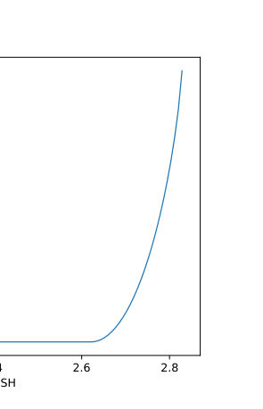
<figcaption class="paper-figure-caption"><b>Fig 1.</b> FIG. 1: Key rate R versus CHSH violation (8we −4) in the large-n regime.</figcaption>
</figure>
</div>

<p><strong>Summary.</strong> This paper introduces a novel, efficient proof technique for constructing seedless randomness extractors essential for device-independent quantum cryptography. By employing a truncation method, the authors overcome previous limitations regarding the number of required experimental rounds. This results in a protocol that achieves the optimal key generation rate, advancing the practical security guarantees of quantum key distribution.</p>
<p><strong>Why it may be interesting.</strong> The work provides rigorous, advanced theoretical tools (truncation methods, spectral analysis) for quantifying security in quantum communication protocols, which is fundamental to quantum information theory.</p>
<details>
<summary>Detailed structure</summary>
<p><strong>Main problem.</strong> The paper addresses the need for high-rate and computationally-efficient seedless randomness extractors for device-independent (DI) quantum cryptography.</p>
<p><strong>Main result.</strong> The authors present a new proof technique using a truncation method that achieves the optimal key rate of one bit per singlet for one-party DI randomness generation.</p>
<p><strong>Method.</strong> The core method involves developing a new proof technique based on truncation to estimate protocol parameters, circumventing the need for many rounds previously required when bounding Bell inequality expectations.</p>
<p><strong>Model / system.</strong> The protocol is set in the context of DI quantum cryptography, utilizing two non-communicating quantum devices (Alice and Bob) whose security relies on violating a Bell inequality (like CHSH). The analysis involves bounding the trace distance between actual and ideal key states.</p>
<p><strong>Key observables.</strong> Bell Violation (CHSH inequality), Key Rate (bits per singlet), Trace Distance ($\epsilon$), and the raw key vector $\mathbf{a}_r$.</p>
<p><strong>Important parameters / regimes.</strong> The asymptotic key rate, the error parameter $\epsilon$, and the threshold winning frequency $w_e$ for the CHSH game.</p>
<p><strong>Assumptions / limitations.</strong> The security proof relies on bounding the trace distance using spectral decomposition and a truncation method, which is shown to be effective for the CHSH setting.</p>
<p><strong>Figures summary.</strong> Figure 1 illustrates the positive region for the key rate $R$ as a function of the CHSH violation ($8w_e - 4$).</p>
<p><strong>Paper structure.</strong> The paper develops proofs for several lemmas, including those related to state dilation (Lemma 1), spectral decomposition of measurement operators (Lemma 2), bounding the trace distance via truncation (Lemma 3), and finally establishing the key rate bound using linear algebra and probability tools (Lemma 7).</p>
</details>
<details>
<summary>Abstract</summary>
<p>Device-independent (DI) quantum cryptography provides secure cryptography with minimal trust in, or characterisation of, the used quantum devices. An essential component of DI protocols is the use of randomness extractors for privacy amplification, but these typically require an initial seed of randomness that introduces a potential vulnerability. To solve this problem, the security of seedless extractors was proven in Quantum 9, 1654 (2025). The core idea was to use the Bell violation of the raw data, rather than its min-entropy, as the extractor promise. However, the large fluctuations in the Bell inequality used required many rounds to precisely estimate the Bell violation, consuming substantial randomness and making the protocol very inefficient. In this work, we present a new proof technique based on a truncation method that allows the user to estimate the protocol parameters with an asymptotically vanishing fraction of rounds and, as a consequence, achieves the optimal rate of one key bit per singlet. Notably, we prove this result using seedless extractors that can be implemented efficiently.</p>
</details>
<p><sub><a href="#top">↑ back to top</a></sub></p>

<p><a id="paper-2605.31441"></a></p>
<h3 id="intrinsic-locality-dimension-of-quantum-codes"><a href="http://arxiv.org/abs/2605.31441v1">Intrinsic locality dimension of quantum codes</a></h3>
<p><strong>Authors:</strong> Yimin Lu, Esther Xiaozhen Fu, Zi-Wen Liu<br>
<strong>Type:</strong> theory · <strong>Category:</strong> quantum information and computing · <strong>PDF:</strong> <a href="https://arxiv.org/pdf/2605.31441v1">https://arxiv.org/pdf/2605.31441v1</a><br>
<strong>Analysis basis:</strong> full PDF text, analyzed in chunks
<strong>Topic relevance:</strong> <code>entanglement &amp; information structure</code> <strong>1/5</strong></p>
<div class="figure-strip-hint">↔ Scroll figures horizontally</div>
<div class="paper-figures-scroll">
<figure class="paper-figure-card">
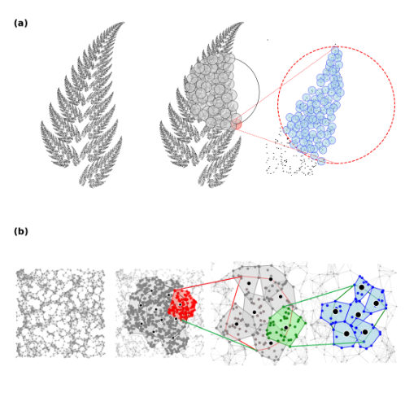
<figcaption class="paper-figure-caption"><b>Fig 1.</b> FIG. 1. Assouad dimension. (a) After “zooming out” so that a ball of radius r becomes a “unit” ball. The number of such r- balls required to cover a ball Nx(R) is at most C(R/r)β where β is the Assouad dimension given by the infimum over all such exponents for all scales r &gt; 0. (b) Doubling condition: An example of the doubling condition for R = 4, 2, 1 on a random unweighted graph with 1500 vertices, where each polygon is a discrete ball of radius R centered at a black dot.</figcaption>
</figure>
<figure class="paper-figure-card">
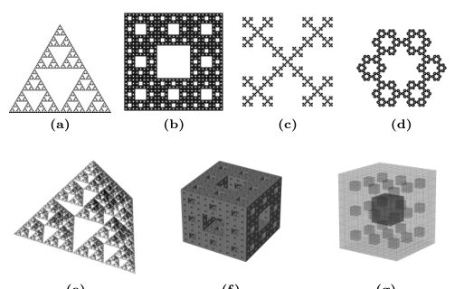
<figcaption class="paper-figure-caption"><b>Fig 2.</b> FIG. 2. Representetive self-similar quasi-convex fractal mod- els and their Assouad dimensions.</figcaption>
</figure>
<figure class="paper-figure-card">
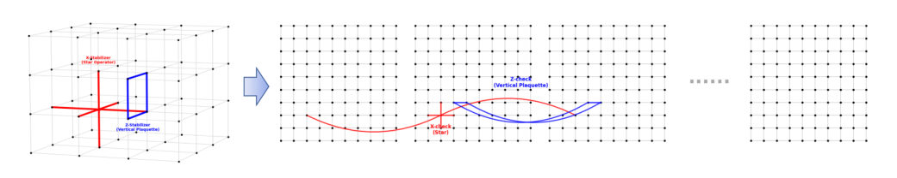
<figcaption class="paper-figure-caption"><b>Fig 3.</b> FIG. 3. Illustration of the mapping from 3D toric code to 2D planar code with long range connectivity: the X-star check 1 + x−1 + x + y−1 + y + z−1 + z ∈F2 [x, y, z] /(xL −1, yL −1, zL −1) maps to 1 + x−1 + x + y−1 + y + x−L + xL ∈F2 [x, y] /(xL2 −1, yL −1), and the vertical Z-plaquette check 1 + x + z + xz maps to 1 + x + xL + xL+1.</figcaption>
</figure>
<figure class="paper-figure-card">
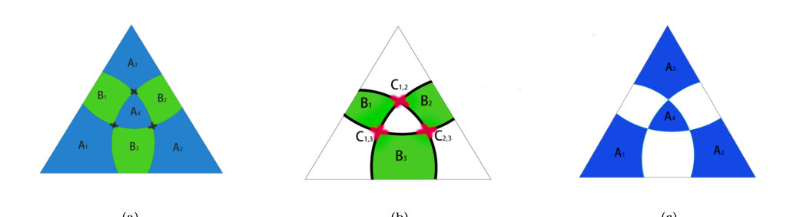
<figcaption class="paper-figure-caption"><b>Fig 4.</b> FIG. 4. Illustration of the generalized BPT partition. (a) A tri-partition for a triangle. (b) C is the union of the thickened red crosses. The black interfaces are absorbed into the green regions B = S ⃗f B ⃗f. (c) A = S ⃗f′ A ⃗f′ is the union of the blue regions without the interfaces.</figcaption>
</figure>
<figure class="paper-figure-card">
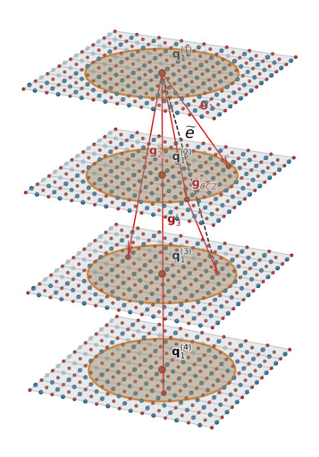
<figcaption class="paper-figure-caption"><b>Fig 5.</b> FIG. 5. Illustration of multi-code-block gates. The red dot q(i) 1 denotes the unique physical qubit parallel to q1 on i-th code block. The arrows g′ 1, g′ 2, g′ 3, g′ CCZ are virtually graph- local cross-block multi-qubit gates, whose support is con- tained in a constant-radius ball centered at q(i) 1 on different blocks. The dashed black line e stands for a new virtual edge on eGλ. By our definition, its weight we = dG(3) λ (q(3) 1 , q3)+1 =</figcaption>
</figure>
</div>

<p><strong>Summary.</strong> This work introduces the intrinsic locality dimension, based on the Assouad dimension, as a unifying geometric parameter for quantum error-correcting codes. It demonstrates that this dimension characterizes code properties, generalizing existing bounds for topological and lattice codes. The theory provides a versatile mathematical foundation for understanding the fundamental geometric limits of fault tolerance.</p>
<p><strong>Why it may be interesting.</strong> The geometric framework provides a powerful, abstract tool to constrain the fundamental capabilities of quantum error correction, linking algebraic structure to geometric measure theory.</p>
<details>
<summary>Detailed structure</summary>
<p><strong>Main problem.</strong> To develop a general, intrinsic geometric characterization of quantum error-correcting codes that is independent of the background geometry.</p>
<p><strong>Main result.</strong> The intrinsic locality dimension, defined via the Assouad dimension, serves as a fundamental parameter unifying code properties and generalizing known bounds for code parameters and fault-tolerant gates.</p>
<p><strong>Method.</strong> The authors employ concepts from fractal geometry, specifically the Assouad dimension, to analyze the connectivity graphs associated with stabilizer codes.</p>
<p><strong>Model / system.</strong> The study focuses on stabilizer quantum codes, analyzing their connectivity graphs, which can be derived from topological structures, fractal sets, or lattice constructions.</p>
<p><strong>Key observables.</strong> Intrinsic locality dimension ($eta$), code parameters ($k, d, n$), and the Assouad dimension of the connectivity graph.</p>
<p><strong>Important parameters / regimes.</strong> The intrinsic dimension $eta$ can take non-integer values; the analysis depends on the structure of the underlying manifold or lattice.</p>
<p><strong>Assumptions / limitations.</strong> The analysis assumes the existence of good triangulations for topological codes and quasi-convexity for fractal constructions to establish dimension equivalences.</p>
<p><strong>Figures summary.</strong> Figures illustrate the Assouad dimension concept using covering numbers and show examples of fractal structures (like the Sierpiński gasket) whose dimensions are calculated.</p>
<p><strong>Paper structure.</strong> The paper builds from defining the intrinsic locality dimension using the Assouad dimension, applies this to specific code types (topological, fractal, lattice), derives general bounds, and concludes with implications for thermal stability.</p>
</details>
<details>
<summary>Abstract</summary>
<p>Quantum error-correcting codes are a cornerstone of quantum computing, with broad and profound connections to physics and mathematics. In this work, we introduce the notion of intrinsic locality dimension of stabilizer codes that is independent of any background geometry and naturally incorporates flexible architectures and accommodates noninteger values, drawing on mathematical machinery from fractal geometry and geometric measure theory. Important scenarios include topological codes and algebraic codes such as bivariate-bicycle-type codes. We show how the intrinsic dimension serves as a fundamental organizing parameter that unifies code properties. In particular, we prove general limitations on code parameters and compatible fault-tolerant logical gates induced by the intrinsic dimension, generalizing the Bravyi--Poulin--Terhal and Bravyi--König bounds for regular topological codes, respectively. Furthermore, we discuss implications on thermal properties, presenting a conditional no-go result for self-correcting quantum memories in dimension $3-ε$ for any $ε>0$. Our theory lays a versatile and unifying mathematical foundation for studying the fundamental capabilities and geometric implementations of quantum error correction and fault tolerance.</p>
</details>
<p><sub><a href="#top">↑ back to top</a></sub></p>

<p><a id="paper-2605.31418"></a></p>
<h3 id="optimization-of-multisite-reactions-in-complex-compartmentalized-media"><a href="http://arxiv.org/abs/2605.31418v1">Optimization of multisite reactions in complex compartmentalized media</a></h3>
<p><strong>Authors:</strong> T. V. Mendes, T. Guérin<br>
<strong>Type:</strong> theory · <strong>Category:</strong> statistical mechanics · <strong>PDF:</strong> <a href="https://arxiv.org/pdf/2605.31418v1">https://arxiv.org/pdf/2605.31418v1</a><br>
<strong>Analysis basis:</strong> full PDF text, analyzed in chunks
<strong>Topic relevance:</strong> <code>non-equilibrium dynamics</code> <strong>1/5</strong></p>
<div class="figure-strip-hint">↔ Scroll figures horizontally</div>
<div class="paper-figures-scroll">
<figure class="paper-figure-card">
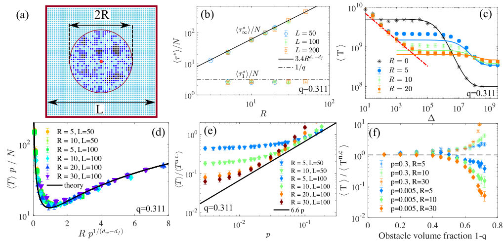
<figcaption class="paper-figure-caption"><b>Fig 1.</b> FIG. 1. (a) Sketch of the system investigated in our simulations, consisting of a crowded sphere of radius R embedded in a regular lattice of side L (the surrounding medium). Light blue : free sites that are connected to the surrounding medium. Deep blue: obstructed sites. Black: free sites that are not connected to the surrounding medium. Red: target site. Here, the system is in two-dimensions, with q = 0.59, but our simulations are in three dimensions. (b) ⟨τ ∗ ∞⟩and ⟨τ ∗ 1 ⟩as a function of the compartment size. Symbols: simulations, with r = 23 for L = 50, r = 44 for L = 100, r = 88 for L = 200. Continuous black line: scaling (4), with α ≃3.4 (obtained from a fit). Dash-dotted black...</figcaption>
</figure>
<figure class="paper-figure-card">
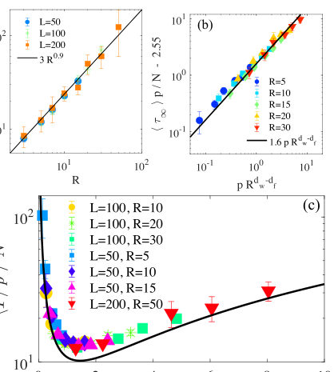
<figcaption class="paper-figure-caption"><b>Fig 2.</b> FIG. 2. Results for mobile targets, with q = 0.311. (a) Mean first passage time versus compartment radius R. (b) Valida- tion of the expression (17) for the activation time for weak reactivity (p &lt; 0.1). (c) Reaction time versus R for different reactivities and ∆= 104 for L = 50, ∆= 105 for L = 100, ∆= 106 for L = 200 and reactivities p &lt; 0.1. The line repre- sents the prediction (18).</figcaption>
</figure>
<figure class="paper-figure-card">
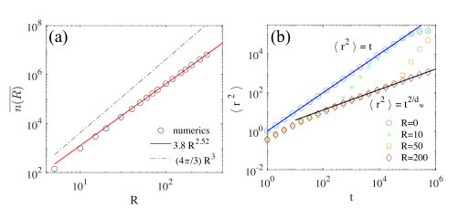
<figcaption class="paper-figure-caption"><b>Fig 3.</b> FIG. 3. (a) Symbols: measured average number of sites of the compartment n(R) that are connected to the external medium. We also show the power-law behavior n(R) ∼Rdf with df ≃2.52 (red line) and the volume occupied by the compartment 4πR3/3 (dash-dotted line). (b) Symbols: mean square displacement for a random walker starting at the cen- ter of the compartment (r = 0), with L = 800 and R indicated in the legend. We also show the power-law ⟨r2⟩= t2/dw with dw ≃3.78 (black line) and the diffusive law ⟨r2⟩= t (blue line).</figcaption>
</figure>
</div>

<p><strong>Summary.</strong> This theoretical work analyzes how confining a reaction target within a compartment characterized by sub-diffusion can optimize the rate of multisite chemical reactions. By deriving scaling laws for mean first passage times, the authors show that the resulting reaction time can be minimized at an optimal compartment size, demonstrating kinetic acceleration despite local transport slowing.</p>
<p><strong>Why it may be interesting.</strong> The core concept of kinetic optimization via geometric confinement is relevant to understanding reaction rates in complex biological environments, which often exhibit fractal or disordered structures.</p>
<details>
<summary>Detailed structure</summary>
<p><strong>Main problem.</strong> The paper investigates how the geometry and dynamics of a complex, compartmentalized medium influence the kinetics of multisite chemical reactions.</p>
<p><strong>Main result.</strong> The presence of a crowded compartment can accelerate the reaction rate compared to an unconfined system, provided the target is weakly reactive, by optimizing the search process.</p>
<p><strong>Method.</strong> The authors derive analytical expressions for mean first passage times and reaction times by adapting arguments from random walk theory in fractal and diffusive media.</p>
<p><strong>Model / system.</strong> The model involves a random walker searching for two or more activation events (dual-site reactions) within a compartment exhibiting fractal sub-diffusion, contrasting this with classical 3D diffusion outside.</p>
<p><strong>Key observables.</strong> Mean reaction time ($\langle T 
angle$), mean first passage time ($\langle 	au^*_r 
angle$), and the speed-up factor relative to the no-compartment case.</p>
<p><strong>Important parameters / regimes.</strong> Compartment size ($R$), reaction probability ($p$), time window ($\Delta$), and diffusion exponents ($d_w, d_f$).</p>
<p><strong>Assumptions / limitations.</strong> The analysis focuses on the weakly reactive limit ($p \ll 1$) and the regime where the time window $\Delta$ is much smaller than the characteristic escape time ($\Delta \ll \langle 	au_\infty 
angle$).</p>
<p><strong>Figures summary.</strong> Figures illustrate the optimization of $\langle T 
angle$ with respect to compartment radius ($R$) and the comparison of the acceleration factor ($\langle T 
angle / \langle T 
angle_{n.c.}$) versus reactivity ($p$).</p>
<p><strong>Paper structure.</strong> The paper builds from calculating mean first passage times in confined/fractal media to deriving the reaction time for multisite events, culminating in showing the optimal size $R_m$ that minimizes $\langle T 
angle$.</p>
</details>
<details>
<summary>Abstract</summary>
<p>In complex media, transport and geometric properties deeply influence the kinetics of random encounters between reactants. Here, we consider the situation where a random walker, moving in a regularly diffusing medium, has to reach and activate a target located inside a compartment characterized by fractal (obstructed) sub-diffusion. We focus on dual-site reactions, which end when two activation events occur within a given time window. Each activation event happens with a finite probability whenever the random walker visits the target. For weakly reactive targets, we demonstrate that the reaction time can be minimized for an optimal compartment size and can even be accelerated when compared to the same system without compartment. Our analytical predictions are validated through simulations of a random walker on a cubic lattice, where some sites inside the compartment are obstructed at the critical percolation threshold. Our theory illustrates the fact that adding a crowded compartment around a target, even if it slows down the motion in its vicinity, can accelerate the kinetics of complex reactions, especially for weakly reactive targets.</p>
</details>
<p><sub><a href="#top">↑ back to top</a></sub></p>

<p><a id="paper-2605.30765"></a></p>
<h3 id="real-time-quantum-error-correction-system-stack-architecture-algorithms-and-engineering-practice"><a href="http://arxiv.org/abs/2605.30765v1">Real-Time Quantum Error Correction System Stack: Architecture, Algorithms, and Engineering Practice</a></h3>
<p><strong>Authors:</strong> Yaojian Chen, Chun-Yang Luan, Peilin Zheng, Xianghong Zeng, Jia-Yi Hou, Zhuo Fu, Yirong Jin, Fei Wang, Guangwen Yang, Dingshun Lv<br>
<strong>Type:</strong> theory · <strong>Category:</strong> quantum information and computing · <strong>PDF:</strong> <a href="https://arxiv.org/pdf/2605.30765v1">https://arxiv.org/pdf/2605.30765v1</a><br>
<strong>Analysis basis:</strong> full PDF text, analyzed in chunks
<strong>Topic relevance:</strong> <code>QC/QI experiment</code> <strong>1/5</strong></p>
<div class="figure-strip-hint">↔ Scroll figures horizontally</div>
<div class="paper-figures-scroll">
<figure class="paper-figure-card">
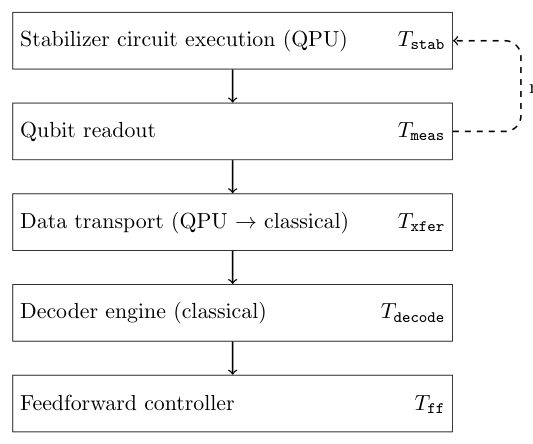
<figcaption class="paper-figure-caption"><b>Fig 1.</b> FIG. 1. End-to-end data path from syndrome extraction to classical feedback. After readout, the</figcaption>
</figure>
<figure class="paper-figure-card">
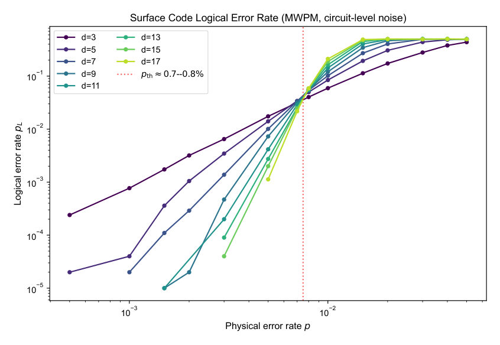
<figcaption class="paper-figure-caption"><b>Fig 2.</b> FIG. 2. Logical error rate vs. physical error rate for rotated surface codes at d = 3–17 using the</figcaption>
</figure>
<figure class="paper-figure-card">
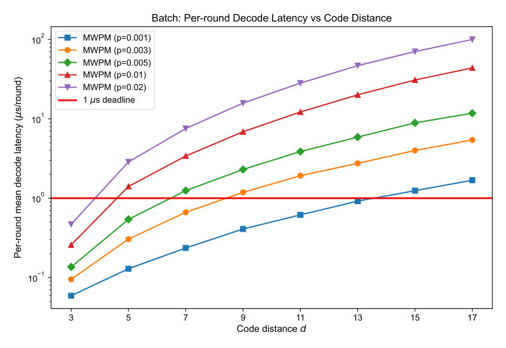
<figcaption class="paper-figure-caption"><b>Fig 3.</b> FIG. 3. Batch mode: per-round mean decode latency vs. code distance at different p. Each point</figcaption>
</figure>
<figure class="paper-figure-card">

<figcaption class="paper-figure-caption"><b>Fig 4.</b> Figure 3 shows the mean per-round decode latency in mode at five physical error rates,</figcaption>
</figure>
<figure class="paper-figure-card">
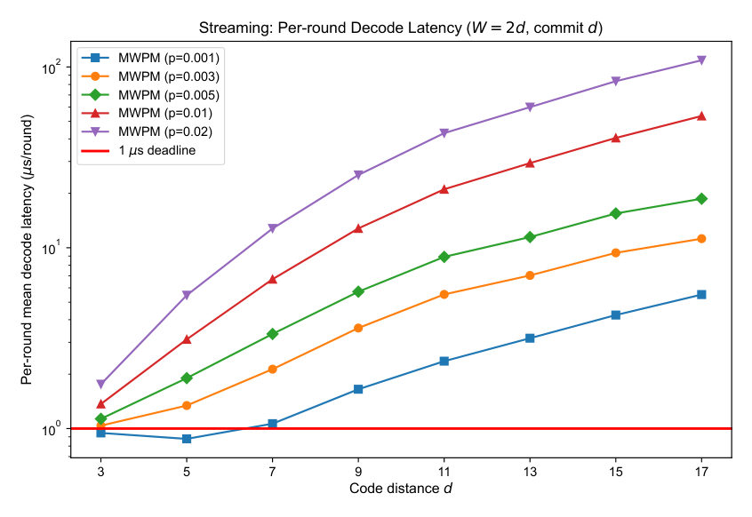
<figcaption class="paper-figure-caption"><b>Fig 5.</b> FIG. 4. Window mode: per-round mean decode latency vs. code distance at different p. Each</figcaption>
</figure>
</div>

<p><strong>Summary.</strong> This white paper addresses the engineering gap preventing scalable quantum computation by analyzing the real-time constraints of Quantum Error Correction (QEC). It proposes a detailed, multi-layer system architecture and benchmarks decoders to show that system latency, not just algorithmic speed, is the primary bottleneck. The work is vital for guiding the development of fault-tolerant quantum hardware.</p>
<p><strong>Why it may be interesting.</strong> It provides a crucial systems-level roadmap for quantum computing hardware, detailing the necessary classical control stack and timing budgets required to make fault-tolerant computation practical.</p>
<details>
<summary>Detailed structure</summary>
<p><strong>Main problem.</strong> The core challenge is transitioning Quantum Error Correction (QEC) from theoretical feasibility to a scalable, real-time systems engineering challenge for Fault-Tolerant Quantum Computing (FTQC).</p>
<p><strong>Main result.</strong> The bottleneck for scalable QEC is not purely algorithmic but resides in system-level engineering constraints, particularly managing tail latency and end-to-end data path coordination.</p>
<p><strong>Method.</strong> The authors propose a six-layer reference architecture and benchmark major decoder algorithms (e.g., MWPM, BP+OSD) across different code types (Surface, qLDPC) to quantify real-time readiness.</p>
<p><strong>Model / system.</strong> The system is modeled as a multi-stage data path: syndrome acquisition, classical decoding, error inference, and correction application, which must operate within strict time budgets.</p>
<p><strong>Key observables.</strong> QEC round time, tail latency (p99), sustained decode throughput ($\mu$), and the accumulated decoding backlog $B(t)$.</p>
<p><strong>Important parameters / regimes.</strong> The operational regime shifts between streaming (Clifford gates) and synchronization barriers (non-Clifford gates like T gates), which dictate the required feedforward latency.</p>
<p><strong>Assumptions / limitations.</strong> The analysis often assumes a uniform depolarizing noise model, though the paper notes that real-device effects like leakage and crosstalk are omitted in current benchmarks.</p>
<p><strong>Figures summary.</strong> The notes reference a multi-stage data path diagram (Figure 1) and tables comparing various decoders and platform-specific timing constraints.</p>
<p><strong>Paper structure.</strong> The paper systematically analyzes the QEC cycle, identifies the shift from algorithmic to engineering bottlenecks, proposes a layered reference architecture, and benchmarks performance across different physical platforms and code families.</p>
</details>
<details>
<summary>Abstract</summary>
<p>Quantum error correction (QEC) is transitioning from physical feasibility demonstrations to systems engineering challenges. Google has achieved below-threshold performance on distance-5/7 surface codes, while Riverlane and Rigetti have demonstrated hardware-integrated low-latency feedback loops. These milestones indicate that the core challenge of real-time decoding has shifted from algorithmic capability to system-level engineering. However, a substantial engineering gap remains between laboratory demonstrations and scalable fault-tolerant quantum computing (FTQC). This white paper addresses three questions: (1) Where are the real bottlenecks in real-time QEC: beyond average decoder speed, the constraints lie in QEC round time, tail latency, and end-to-end data path coordination; (2) How mature are mainstream decoder algorithms: we benchmark the major decoders for both surface codes and quantum low-density parity-check (qLDPC) codes, evaluating their real-time readiness; (3) What system stack do we propose: a six-layer reference architecture from syndrome acquisition to logical operations, with interface definitions and latency budget models. Our results quantify the gap between current decoder performance and real-time requirements, and identify the architectural choices needed to close it.</p>
</details>
<p><sub><a href="#top">↑ back to top</a></sub></p>

<p><a id="paper-2605.31139"></a></p>
<h3 id="shallow-electronic-state-preparation-for-quantum-chemistry-with-quantum-monte-carlo-pre-selection"><a href="http://arxiv.org/abs/2605.31139v1">Shallow Electronic State Preparation for Quantum Chemistry with Quantum Monte Carlo Pre-Selection</a></h3>
<p><strong>Authors:</strong> Eline Welling, Lila Cadi-Tazi, Alex J. W. Thom, Maria-Andreea Filip<br>
<strong>Type:</strong> both · <strong>Category:</strong> other · <strong>PDF:</strong> <a href="https://arxiv.org/pdf/2605.31139v1">https://arxiv.org/pdf/2605.31139v1</a><br>
<strong>Analysis basis:</strong> full PDF text, analyzed in chunks
<strong>Topic relevance:</strong> <code>QC/QI experiment</code> <strong>1/5</strong></p>
<div class="figure-strip-hint">↔ Scroll figures horizontally</div>
<div class="paper-figures-scroll">
<figure class="paper-figure-card">
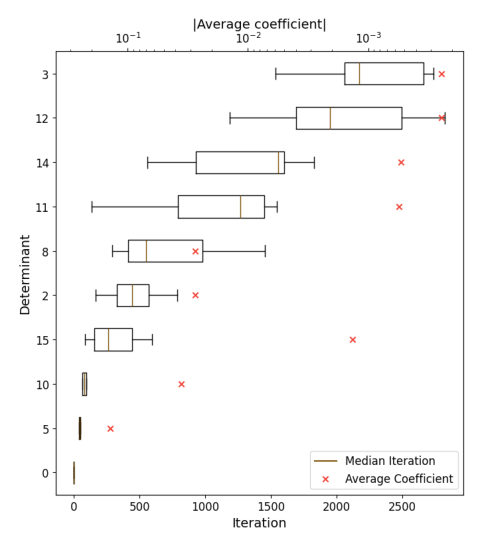
<figcaption class="paper-figure-caption"><b>Fig 1.</b> Fig. 1 BeH2: Boxplots show the distribution of iterations at which each determinant is first spawned across 10 independent QMC-Givens runs of BeH2. Medians are indicated by vertical lines, with boxes spanning the interquartile range. Crosses (×) mark the absolute value of the average coefficient of each determinant at convergence, averaged over the same 10 runs. Determinants are given an index and then ordered by spawning iteration in the plot; those spawned earlier tend to carry larger weights in the converged wavefunction.</figcaption>
</figure>
<figure class="paper-figure-card">
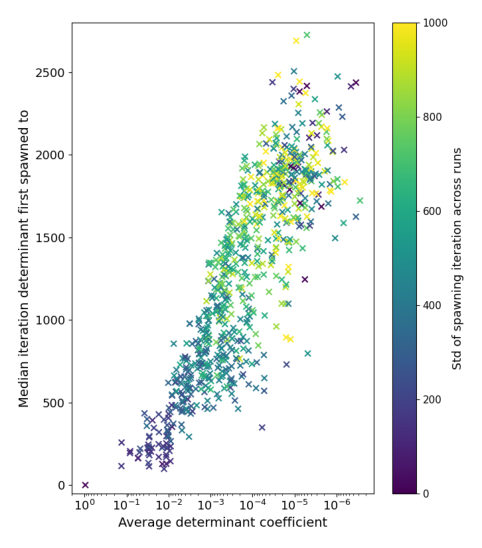
<figcaption class="paper-figure-caption"><b>Fig 2.</b> Fig. 2 N2: Average determinant coefficient magnitude versus median spawning iteration across 10 independent QMC-Givens runs. Each cross marks one determinant, with color indicating the standard deviation of its spawning iteration across the 10 runs. Although individual spawning events show substantial run-to-run variation, the overall ordering is reproducible across runs: determinants with larger converged coefficients are consistently spawned earlier in the sampling (see Table I).</figcaption>
</figure>
<figure class="paper-figure-card">
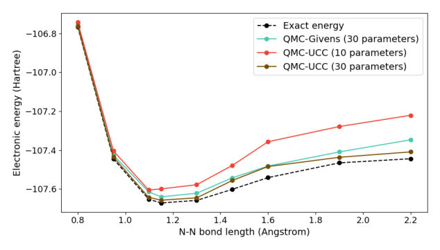
<figcaption class="paper-figure-caption"><b>Fig 3.</b> Fig. 3 N2 binding curve. Solid curves show statevector VQE energies for the QMC-Givens ansatz (30 excitation parameters) and QMC-UCCSD ans¨atze with 10 and 30 parameters. The black dashed curve is the exact ground-state energy obtained by full diagonalization of the electronic Hamiltonian in this basis. We note that as this is a stochastic procedure, some variation in the results is possible.</figcaption>
</figure>
<figure class="paper-figure-card">
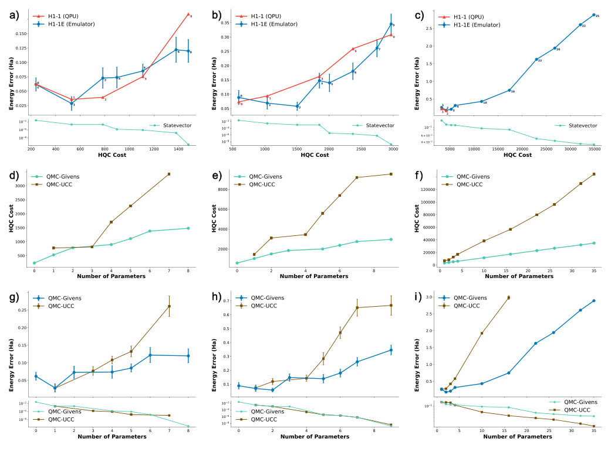
<figcaption class="paper-figure-caption"><b>Fig 4.</b> Fig. 4 Performance of the QMC-Givens and QMC-UCC ans¨atze for LiH, BeH2, and N2. Columns correspond to molecular systems, as indicated at the top. All energies were computed using 1000 shots; where applicable, error bars are estimated from 10 independent samples. a) - c): Energy accuracy as a function of HQC cost for increasing circuit sizes, shown for H1 hardware, the H1-1E noisy emulator, and ideal statevector simulations. d) - e): HQC cost versus number of variational parameters for QMC-Givens and QMC-UCC circuits. f) - i): Energy accuracy versus number of parameters, comparing QMC-Givens and QMC-UCC on the H1-1E emulator (upper curves) and the statevector simulator (lower curves).</figcaption>
</figure>
<figure class="paper-figure-card">
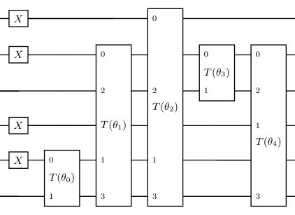
<figcaption class="paper-figure-caption"><b>Fig 5.</b> Fig. 5 QMC-Givens and QMC-UCC ansatz circuits for LiH with 5 parameters.</figcaption>
</figure>
</div>

<p><strong>Summary.</strong> This paper introduces a novel Quantum Monte Carlo (QMC) pre-screening technique to construct shallow, hardware-efficient quantum circuits for molecular electronic structure calculations. By using Givens rotations, the method significantly reduces circuit depth compared to standard UCC ansätze, enabling chemical accuracy on current noisy quantum devices. This provides a crucial, tunable trade-off between computational power and hardware feasibility for quantum chemistry.</p>
<p><strong>Why it may be interesting.</strong> This work directly addresses the gap between theoretical quantum chemistry requirements and the physical limitations of near-term quantum hardware by proposing a resource-aware ansatz construction technique.</p>
<details>
<summary>Detailed structure</summary>
<p><strong>Main problem.</strong> The core challenge is developing quantum algorithms for molecular electronic structure simulation that are shallow enough to run reliably on current, noisy quantum hardware.</p>
<p><strong>Main result.</strong> The proposed QMC-Givens ansatz provides a significantly shallower and more hardware-efficient alternative to conventional Unitary Coupled Cluster (UCC) methods, especially in the presence of noise.</p>
<p><strong>Method.</strong> The authors combine Quantum Monte Carlo (QMC) pre-screening to identify crucial wavefunction components with the use of Givens rotation ansätze within the Variational Quantum Eigensolver (VQE) framework.</p>
<p><strong>Model / system.</strong> The work focuses on simulating the electronic structure of small molecules ($   ext{LiH}$, $    ext{BeH}_2$, $  ext{N}_2$) using fermionic operators mapped to qubits. Benchmarking was performed on the Quantinuum System Model H1.</p>
<p><strong>Key observables.</strong> Ground state energy, circuit depth, Hardware Quantum Credits (HQC) cost, and the Spearman rank correlation coefficient ($
ho$) quantifying parameter importance.</p>
<p><strong>Important parameters / regimes.</strong> The trade-off between circuit expressivity (depth) and circuit depth is a key parameter space explored, tailored for current high-noise devices.</p>
<p><strong>Assumptions / limitations.</strong> The controlled Givens ansatz is used for its relative ease of classical implementation; furthermore, the final analysis suggests that zero-initialization might outperform QMC-initialization for certain systems.</p>
<p><strong>Figures summary.</strong> Figures illustrate the correlation between early determinant spawning and final amplitudes (Fig. 1, 2), compare energy error vs. parameters (Fig. 3), and compare initialization strategies (Fig. 4).</p>
<p><strong>Paper structure.</strong> The paper introduces the QMC-Givens method as an improvement over UCC for quantum chemistry. It details the QMC pre-screening procedure, benchmarks the ansatz on molecular systems using hardware metrics (HQC), and concludes by demonstrating the practical advantages of shallow circuits on noisy hardware.</p>
</details>
<details>
<summary>Abstract</summary>
<p>Quantum computers hold great promise for molecular simulation, but noise remains a fundamental obstacle. We introduce a Quantum Monte Carlo (QMC) pre-screening procedure that constructs compact, physically motivated Givens rotation ansätze tailored to realistic quantum hardware. By identifying the most important wavefunction contributions early in a QMC simulation, we build circuits that are shallower that conventional alternatives while preserving number symmetry. Benchmarked on Quantinuum System Model H1, QMC-prescreened circuits outperform more complex ansätze under realistic noise conditions. The method offers a practical path toward chemical accuracy on quantum devices, by providing an adjustable trade-off between expressivity and circuit depth to generate shallow circuits suited to current high-noise devices, as well as deeper, more expressive circuits that can be deployed on future lower-noise devices.</p>
</details>
<p><sub><a href="#top">↑ back to top</a></sub></p>

<p><a id="paper-2605.30584"></a></p>
<h3 id="symmetry-resolved-second-harmonic-generation-in-quantum-and-functional-materials"><a href="http://arxiv.org/abs/2605.30584v1">Symmetry-Resolved Second Harmonic Generation in Quantum and Functional Materials</a></h3>
<p><strong>Authors:</strong> Xiaoyu Guo, Chang Jae Roh, Youngjun Ahn<br>
<strong>Type:</strong> both · <strong>Category:</strong> strongly correlated electrons · <strong>PDF:</strong> <a href="https://arxiv.org/pdf/2605.30584v1">https://arxiv.org/pdf/2605.30584v1</a><br>
<strong>Analysis basis:</strong> full PDF text, analyzed in chunks
<strong>Topic relevance:</strong> <code>interference shaping light</code> <strong>1/5</strong></p>
<div class="figure-strip-hint">↔ Scroll figures horizontally</div>
<div class="paper-figures-scroll">
<figure class="paper-figure-card">
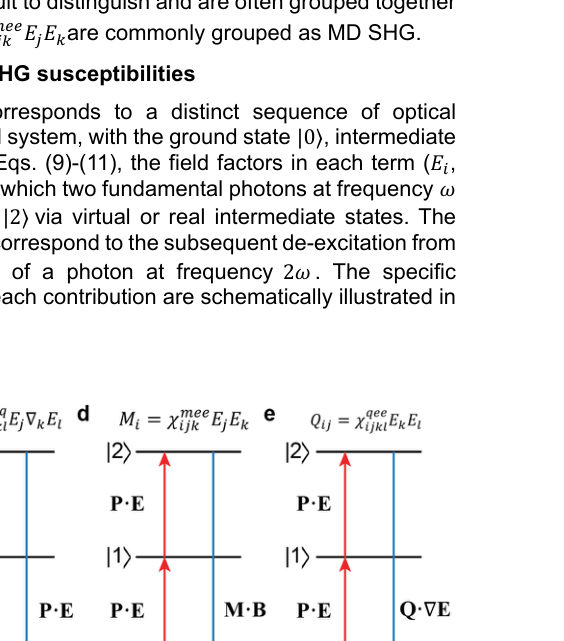
<figcaption class="paper-figure-caption"><b>Fig 1.</b> Fig. 1. Optical transitions and the corresponding radiation sources</figcaption>
</figure>
<figure class="paper-figure-card">
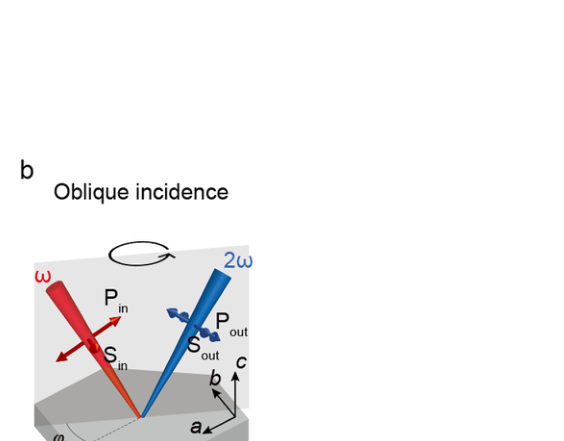
<figcaption class="paper-figure-caption"><b>Fig 2.</b> Fig. 2. Schematic illustration of RA-SHG measurement geometries. (a) Normal-incidence RA-SHG geometry, where the fundamental beam at 𝜔 is incident normal to the sample surface and the reflected SHG signal at 2𝜔 is collected along the same optical axis. The incident and detected polarizations are rotated by an azimuthal angle 𝜑 with respect to the crystallographic axes. Parallel and cross channels denote configurations in which the two polarizations are parallel and perpendicular, respectively. (b) Oblique-incidence RA-SHG geometry, where the incident and reflected beams propagate at finite angles from the surface normal. This geometry provides access to both in-plane and out-of-plane tensor...</figcaption>
</figure>
<figure class="paper-figure-card">
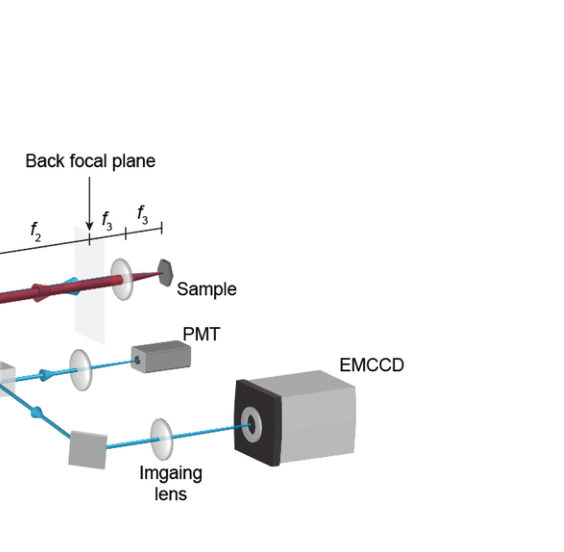
<figcaption class="paper-figure-caption"><b>Fig 3.</b> Fig. 3. Schematic of the optical platform of RA-SHG scanning microscopy and wide- field SHG imaging. The incident fundamental beam is conditioned by a low-pass filter (LPF), and its polarization varies by half-wave plate (HWP). The galvo mirrors scan the focused beam across the sample. The reflected SHG signal is separated by a dichroic mirror (DM) and analyzed by a linear polarizer (LP). The remaining fundamental light is further removed by a set of filters. The signal is then directed to a photomultiplier tube (PMT) for scanning SHG microscopy or to an electron-multiplying charge-coupled device (EMCCD) for wide-field imaging. BS: beam splitter.</figcaption>
</figure>
<figure class="paper-figure-card">
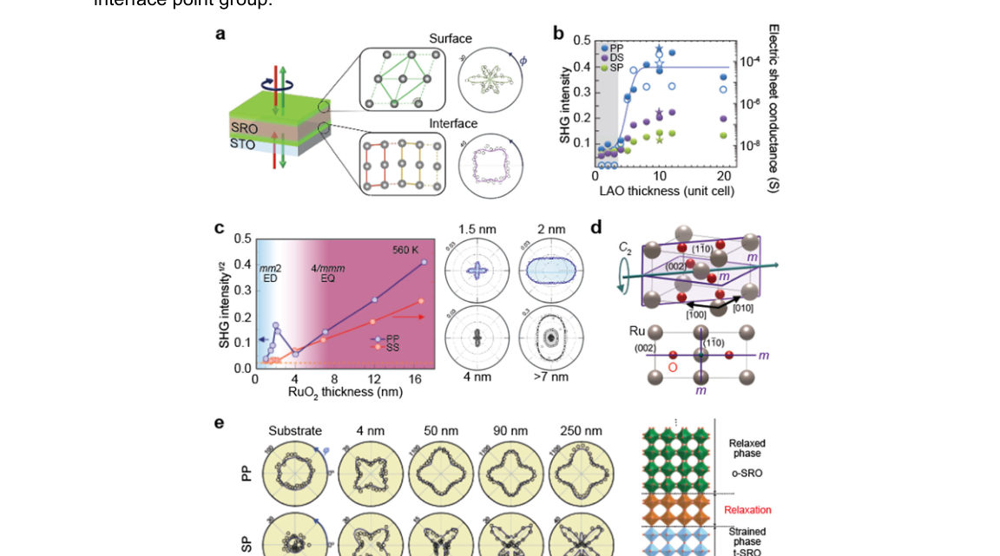
<figcaption class="paper-figure-caption"><b>Fig 4.</b> Fig. 4. Surface and interface symmetry characterization of oxide heterostructures using SHG. (a) Schematic of front-side and back-side reflection geometries used to distinguish surface and interface SHG responses in SrRuO3/SrTiO3 heterostructures. The corresponding RA-SHG patterns reveal different local crystalline symmetries at the film surface and interface. (b) Thickness-dependent SHG response of LaAlO3/SrTiO3, showing the onset of interface SHG near the critical LaAlO3 thickness where interfacial conductivity</figcaption>
</figure>
<figure class="paper-figure-card">
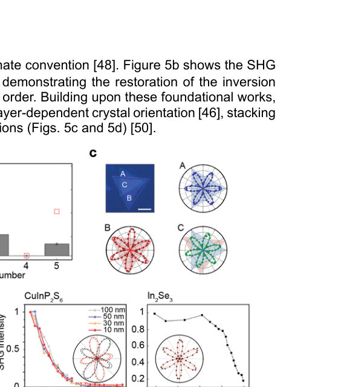
<figcaption class="paper-figure-caption"><b>Fig 5.</b> Fig. 5. Crystal symmetry characterization in vdW materials using RA-SHG. (a) Crystal structure of monolayer MoS2 and representative RA-SHG patterns measured in parallel and cross polarization channels, consistent with 6ത𝑚2 point group. (b) Layer-number dependence of SHG intensity, showing finite SHG responses from odd-layer MoS2 and suppressed SHG responses from even-layer MoS2. (c) RA-SHG patterns from MoS2 flakes with different in-plane crystal orientations. (d) Schematic of uniaxially strained monolayer MoS2, with strain applied along 𝑥-axis, and corresponding RA-SHG patterns under different strain magnitudes. (e) Temperature- and thickness-dependent SHG intensity from ferroelectric...</figcaption>
</figure>
</div>

<p><strong>Summary.</strong> This review details how Second Harmonic Generation (SHG) acts as a symmetry-resolved optical technique to probe hidden order parameters in quantum and functional materials. By analyzing polarization-resolved rotational anisotropy (RA-SHG), researchers can map out the symmetry-allowed components of the nonlinear susceptibility tensor. This methodology provides a crucial link between fundamental group theory and the measurable electronic and magnetic states of complex condensed matter systems.</p>
<p><strong>Why it may be interesting.</strong> The connection between symmetry group theory, nonlinear optics, and emergent electronic order parameters provides a powerful, non-perturbative diagnostic tool for studying symmetry breaking in strongly correlated systems, which is highly relevant to modern condensed matter theory.</p>
<details>
<summary>Detailed structure</summary>
<p><strong>Main problem.</strong> The central problem is identifying the symmetry of ordered phases in quantum and functional materials, as these phases are defined by the symmetries they break.</p>
<p><strong>Main result.</strong> The paper establishes that Second Harmonic Generation (SHG) spectroscopy, particularly polarization-resolved rotational anisotropy (RA-SHG), serves as a powerful, symmetry-resolved optical probe to map out these hidden order parameters.</p>
<p><strong>Method.</strong> The methodology combines rigorous quantum mechanical derivations of nonlinear susceptibility tensors ($\chi$) with group-theoretical constraints (Landau theory) to predict symmetry-allowed SHG responses.</p>
<p><strong>Model / system.</strong> The analysis focuses on condensed matter systems, including polar, magnetic, and electronic materials, using the nonlinear optical process of SHG ($\omega 	o 2\omega$). The theoretical framework involves multipole expansions (ED, MD, EQ) and symmetry analysis within point groups like $C_{4v}$.</p>
<p><strong>Key observables.</strong> Nonlinear susceptibility tensor components ($\chi_{ijk}$), SHG intensity as a function of rotation angle ($\varphi$), and the symmetry-allowed coupling terms related to order parameters ($\phi$).</p>
<p><strong>Important parameters / regimes.</strong> Crystallographic and magnetic point group symmetries, polarization states (P/C, SS/SP/PS/PP), and the order parameter magnitude ($\phi$).</p>
<p><strong>Assumptions / limitations.</strong> The quantum mechanical formalism is rigorous but may struggle with materials exhibiting strong electronic correlations or complex orbital hybridization; the symmetry analysis relies on the invariance principles of the parent point group.</p>
<p><strong>Figures summary.</strong> Figures illustrate the multipole sources (ED, MD, EQ) for SHG radiation and schematically depict the various geometries for RA-SHG measurements (normal vs. oblique incidence).</p>
<p><strong>Paper structure.</strong> The paper progresses from the basic theoretical background of SHG sources (multipole expansion) to the quantum mechanical derivation of susceptibility tensors, followed by a comprehensive review of RA-SHG applications across various symmetry-breaking phenomena, and concluding with future research directions.</p>
</details>
<details>
<summary>Abstract</summary>
<p>Second harmonic generation (SHG) has evolved from a probe of noncentrosymmetric crystals into a symmetry-resolved optical method for identifying order parameters in quantum and functional materials. In particular, polarization-resolved rotational anisotropy (RA) measurements of SHG can connect nonlinear susceptibility tensors to the crystallographic and magnetic point groups of the underlying materials. This capability is especially powerful when the ordered state is weak, spatially confined, multipolar, magnetic, or hidden from conventional linear probe techniques. In this review article, we provide a comprehensive overview of RA-SHG studies across a broad range of condensed matter systems. We begin with basic theoretical background for the multipole origins of SHG radiation, the construction of nonlinear susceptibility tensors, and group-theoretical framework connecting tensor components to order parameters. We then review the applications of RA-SHG to polar materials, magnetic orders, and other hidden electronic materials. Finally, we outline challenges and future research directions for using SHG to reveal, image, and control hidden, intertwined, and nonequilibrium phases in quantum and functional materials.</p>
</details>
<p><sub><a href="#top">↑ back to top</a></sub></p>
<h2 id="other-papers-16">Other papers (16)</h2>
<p><em>Papers from primary archives without highlighted authors or any topic match. Click to expand.</em></p>
<details>
<summary>Show other papers</summary>

<p><a id="paper-2605.30455"></a></p>
<h3 id="a-denser-planar-surface-code"><a href="http://arxiv.org/abs/2605.30455v1">A Denser Planar Surface Code</a></h3>
<p><strong>Authors:</strong> Guang Hao Low, William J. Huggins, Dominic W. Berry, Tanuj Khattar, Alec F. White, Nicholas C. Rubin, Ryan Babbush<br>
<strong>Type:</strong> theory · <strong>Category:</strong> quantum information and computing · <strong>PDF:</strong> <a href="https://arxiv.org/pdf/2605.30455v1">https://arxiv.org/pdf/2605.30455v1</a><br>
<strong>Analysis basis:</strong> full PDF text, analyzed in chunks</p>
<div class="figure-strip-hint">↔ Scroll figures horizontally</div>
<div class="paper-figures-scroll">
<figure class="paper-figure-card">
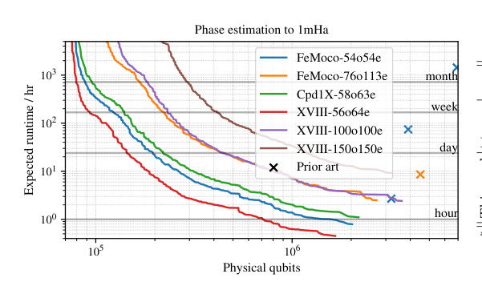
<figcaption class="paper-figure-caption"><b>Fig 1.</b> FIG. 1. Pareto frontier of physical resources for chemically-accurate ground state phase estimation of ‘utility-scale’ benchmark molecules with 54 to 150 orbitals, assuming quantum hardware with nearest-neighbor connectivity, a 10−3 physical error rate, a surface code cycle time of 1µs, and a reaction time of 10µs. Shown are estimates for the FeMo-cofactor for nitrogen fixation, the XVIII configuration of a Ruthenium-based catalyst for carbon fixation, and the Cpd1X configuration of a metabolic cofactor p450. We present new space-time tradeoffs in quantum circuits and quantum error correction for compiling the second-quantized Double-Factorized-Tensor-HyperContracted (DFTHC) electronic...</figcaption>
</figure>
<figure class="paper-figure-card">
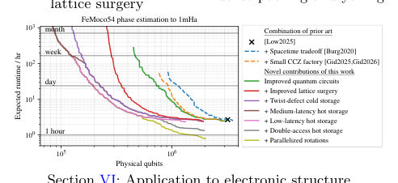
<figcaption class="paper-figure-caption"><b>Fig 2.</b> FIG. 2. Summary of our key contributions. Section II: We reduce the lattice surgery bounding box of a distance d rotated surface code patch from 2(d + 1)2 to 2d2 physical qubits. Section III: We introduce an optimal-depth, hook-error-free, and efficiently decodable implementation of surface code twist defects using nearest-neighbor gates on a degree-3 hex grid. This enables a packing of three logical qubits into a rectangular patch with a 1.5× encoding rate. By merging boundaries of three-qubit rectangles, we obtain a dense packing of logical qubits in twist defects with asymptotically a 2× encoding rate. By yoking this dense packing of twist defects, we obtain logical qubit “cold storage”...</figcaption>
</figure>
<figure class="paper-figure-card">
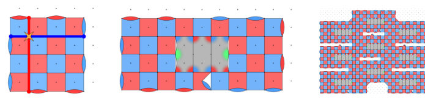
<figcaption class="paper-figure-caption"><b>Fig 3.</b> FIG. 3. (Left) Rotated surface code patch with weight-4 Pauli-Z (blue) and X (red) stabilizers occupying a footprint of d2</figcaption>
</figure>
<figure class="paper-figure-card">
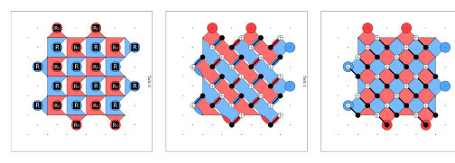
<figcaption class="paper-figure-caption"><b>Fig 4.</b> FIG. 4. The N-</figcaption>
</figure>
<figure class="paper-figure-card">
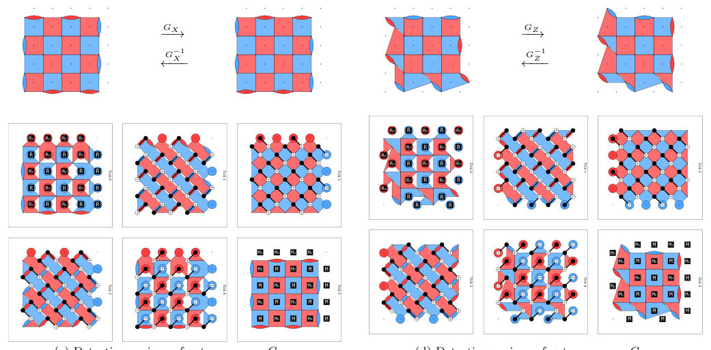
<figcaption class="paper-figure-caption"><b>Fig 5.</b> FIG. 5. Surface code patch encoding one logical qubit using Z (blue) and X (red) stabilizers with a footprint of d2 data qubits and d2 −1 measurement qubits for (left) the case previously known X-top configuration. All stabilizers are measured by preparing either a |+⟩or |0⟩state followed by a sequence GX of four layers of CX gates. The alternating sequence GX, G−1 X of [3] is a Floquet code that alternates between two end-cycles and achieves circuit-level distance d [27]. In this work, we demonstrate (right) a new Z-top configuration that permits lattice surgery operations within a bounding box of 2d2 qubits per patch. The gate sequence (bottom right) GZ is identical to GX in the bulk but...</figcaption>
</figure>
</div>
<p><strong>Summary.</strong> This paper introduces a novel, denser planar surface code architecture by efficiently packing twist defects into a 2D hex grid. This advancement boosts the encoding rate by 4.5x, leading to substantial reductions in the required physical qubits and computational time for simulating complex electronic structures, such as nitrogen fixation catalysts.</p>
<p><strong>Why it may be interesting.</strong> The focus on optimizing resource scaling for quantum simulation, particularly by improving the encoding rate of topological codes, directly impacts the feasibility timeline for quantum chemistry simulations.</p>
<details>
<summary>Detailed structure</summary>
<p><strong>Main problem.</strong> The primary challenge is achieving utility-scale quantum simulation for electronic structure problems while drastically reducing the required physical quantum resources.</p>
<p><strong>Main result.</strong> The authors propose a dense packing of surface code twist defects, achieving an estimated encoding rate up to 4.5x that of standard surface codes, leading to significant improvements in resource estimates.</p>
<p><strong>Method.</strong> The work develops new stabilizer measurement cycles and padding-free lattice surgery protocols to implement a denser, more efficient planar surface code architecture.</p>
<p><strong>Model / system.</strong> The system is a quantum computer utilizing the surface code for fault-tolerant quantum error correction, implemented on a regular 2D hex grid. The target application is ground state phase estimation for electronic structure problems.</p>
<p><strong>Key observables.</strong> Encoding rate (up to 4.5x improvement), minimum physical quantum volume (1.3 mega-qubit-hours), and resource trade-offs across space, time, and qubit count.</p>
<p><strong>Important parameters / regimes.</strong> Noise model: one- and two-qubit $10^{-3}$ error uniform depolarizing model. Time scales: $1\mu$s cycle time, $10\mu$s reaction time. Target: Chemical accuracy for FeMoco catalyst.</p>
<p><strong>Assumptions / limitations.</strong> Assumes an ideal outer decoder for lattice surgery and uses circuit-level noise modeling; the comparison to prior art relies on specific resource estimates (e.g., Toffoli gate counts).</p>
<p><strong>Figures summary.</strong> Figure 1 illustrates the Pareto frontier of physical resources for ground state phase estimation, comparing the new dense-packing approach against prior art across 'Compact', 'Balanced', 'Efficient', and 'Fast' regimes.</p>
<p><strong>Paper structure.</strong> The paper progresses by first identifying the resource bottleneck of standard surface codes, then introducing the dense-packing twist defect strategy, detailing the optimized lattice surgery protocols, and finally applying the resulting resource estimates to benchmark utility-scale quantum simulation tasks.</p>
</details>
<details>
<summary>Abstract</summary>
<p>We present a quantum code implementable on a regular $2$D hex grid with an estimated encoding rate up to $4.5\times$ of that of a rotated surface code patch using circuit-level noise in a one- and two-qubit $10^{-3}$ error uniform depolarizing model. Our approach is based on yoking a dense packing of surface code twist defects, enabled by new stabilizer measurement cycles with an optimal four layers of nearest-neighbor two-qubit gates, almost no distance-reducing hook errors, and efficient decoding. We demonstrate a space-efficient architecture for computing on densely packed logical qubits, including new padding-free lattice surgery protocols in an optimal bounding box of $2d^2$ data and measurement qubits per patch. Assuming a $1μ$s surface code cycle time and a $10μ$s reaction time, these developments enable chemically accurate ground state phase estimation of a broad class of `utility-scale' electronic structure simulation problems such as the $108$ spin-orbital FeMoco-based nitrogen fixation catalyst in under a month with $89$k noisy superconducting qubits. We elucidate a Pareto frontier of space-time trade-offs and find a minimum physical quantum volume of $1.3$ mega-qubit-hours. These correspond to a $36\times$ space and $6.6\times$ spacetime improvement, respectively, over our previous state-of-the-art minimum-Toffoli resource estimates (Phys. Rev. X 15, 041016).</p>
</details>
<p><sub><a href="#top">↑ back to top</a></sub></p>

<p><a id="paper-2605.30536"></a></p>
<h3 id="ambiguity-problem-of-the-bootstrap-method-in-quantum-mechanics"><a href="http://arxiv.org/abs/2605.30536v1">Ambiguity problem of the Bootstrap Method in Quantum Mechanics</a></h3>
<p><strong>Authors:</strong> Takeshi Morita, Worapat Piensuk, Pushkar Soni<br>
<strong>Type:</strong> theory · <strong>Category:</strong> other · <strong>PDF:</strong> <a href="https://arxiv.org/pdf/2605.30536v1">https://arxiv.org/pdf/2605.30536v1</a><br>
<strong>Analysis basis:</strong> full PDF text, analyzed in chunks</p>
<div class="figure-strip-hint">↔ Scroll figures horizontally</div>
<div class="paper-figures-scroll">
<figure class="paper-figure-card">
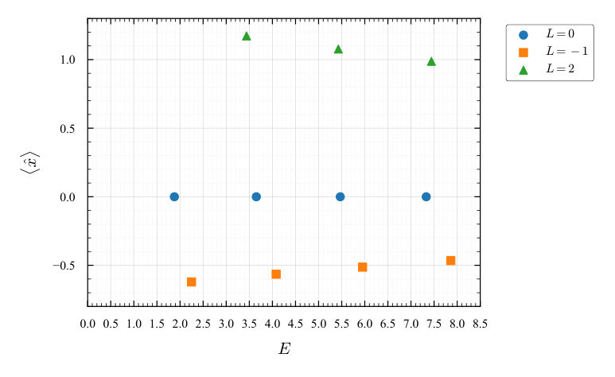
<figcaption class="paper-figure-caption"><b>Fig 1.</b> Figure 1: The spectrum of the Hamiltonian with the mixed potential (2.2) for L = 0, −1, and 2. We plot the energy eigenvalues E against the expectation values ⟨ˆx⟩. The spectrum clearly depends on the value of L. We use the NDEigensystem package in Mathematica to solve the Schr¨odinger equation numerically, and we later compare this spectrum with the results obtained using the bootstrap method.</figcaption>
</figure>
<figure class="paper-figure-card">
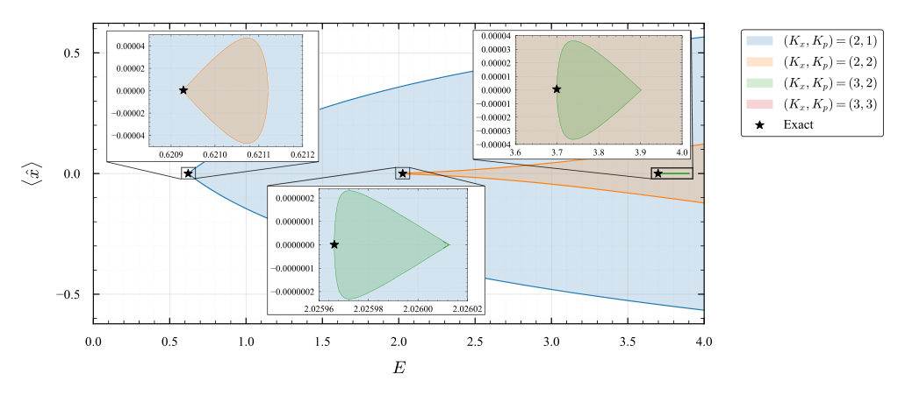
<figcaption class="paper-figure-caption"><b>Fig 2.</b> Figure 2: Numerical bootstrap result for the anharmonic oscillator (2.1). The colored regions show the allowed regions on the (E, ⟨ˆx⟩)-plane that satisfy the condition M ⪰0. We use the bootstrap matrix M with Kx and Kp defined in Eq. (2.4). “Numerical” refers to the result obtained using the NDEigensystem package in Mathematica. Some of the allowed regions are difficult to see in this figure because they are extremely small, almost point-like, and their detailed values are listed in Table 1. As Kx and Kp increase, the allowed regions shrink, and converge to the numerical results. Here, ⟨ˆx⟩converges to 0, as expected from the parity symmetry.</figcaption>
</figure>
<figure class="paper-figure-card">
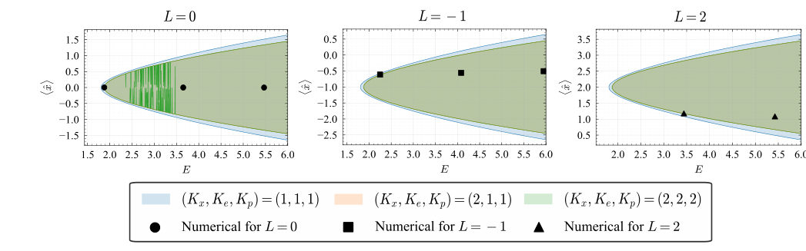
<figcaption class="paper-figure-caption"><b>Fig 3.</b> Figure 3: Allowed regions for the mixed potential (2.2) with L = 0, −1 and 2, obtained using the conventional bootstrap method. The “numerical” points correspond to those shown in Fig. 1. Up to (Kx, Ke, Kp) = (2, 2, 2), no isolated allowed regions appear. The result for (Kx, Ke, Kp) = (2, 2, 2) at L = 0 shows some numerical noise. These three figures become almost identical once we shift ⟨x⟩→⟨x⟩−L as shown in Fig. 4, indicating that the bootstrap method cannot distinguish between different values of L and therefore fails to reproduce the spectrum.</figcaption>
</figure>
<figure class="paper-figure-card">
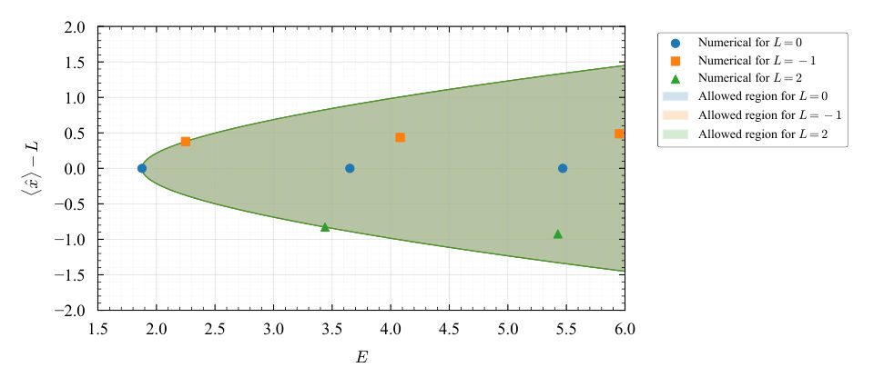
<figcaption class="paper-figure-caption"><b>Fig 4.</b> Figure 4: Allowed regions of the mixed potential (2.2) for L = 0, −1 and 2 on the (E, ⟨x⟩−L) plane. The dots represent the numerical results shown in Fig. 1. We use the bootstrap matrix at (Kx, Ke, Kp) = (2, 2, 1). The three allowed regions for the different values of L, obtained using the conventional bootstrap method and shown in Fig. 3, coincide up to numerical errors, and therefore cannot be distinguished in this plot. This demonstrates that the conventional bootstrap method cannot reproduce the energy spectrum, which depends on L.</figcaption>
</figure>
<figure class="paper-figure-card">
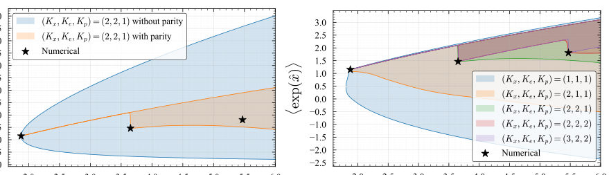
<figcaption class="paper-figure-caption"><b>Fig 5.</b> Figure 5: The allowed regions of the mixed potential (2.2) for L = 0 obtained using the bootstrap method with the parity condition (3.2). The vertical axis is ⟨exp(ˆx)⟩instead of ⟨ˆx⟩, because the condition ⟨ˆx⟩= 0 has been imposed. (left panel) Comparison of the allowed region with and without imposing the parity condition at (Kx, Ke, Kp) = (2, 2, 1). The allowed region is drastically reduced by imposing the parity condition. (right panel) Results at various (Kx, Ke, Kp). As we increase the size of the bootstrap matrix, the allowed region shrinks and kinks appear. The energy eigenvalues are located at these kinks, indicating that the bootstrap analysis captures the eigenstates. Although...</figcaption>
</figure>
</div>
<p><strong>Summary.</strong> This paper investigates the ambiguity problem inherent in applying the bootstrap method to quantum Hamiltonians with mixed potentials. The authors demonstrate that the method fails for such potentials but propose and test several resolutions, including imposing additional positivity constraints. These resolutions successfully recover the correct energy spectrum for specific cases, providing a more robust theoretical framework.</p>
<p><strong>Why it may be interesting.</strong> The work tackles a fundamental theoretical limitation of a powerful mathematical tool (the bootstrap method) used to determine quantum spectra, offering systematic ways to resolve ambiguities arising from operator structure.</p>
<details>
<summary>Detailed structure</summary>
<p><strong>Main problem.</strong> The bootstrap method for quantum mechanics suffers from an ambiguity problem, failing to yield the correct energy spectrum when the potential contains mixed functional forms (e.g., polynomial and exponential terms).</p>
<p><strong>Main result.</strong> The ambiguity can be resolved by imposing additional positivity conditions, such as $M_{\cosh} \succeq 0$, which successfully reproduce the true energy spectrum for certain potentials.</p>
<p><strong>Method.</strong> The authors use the bootstrap method, which constrains energy eigenvalues by enforcing the positive semi-definite condition ($M \succeq 0$) on a constructed bootstrap matrix derived from expectation values.</p>
<p><strong>Model / system.</strong> The analysis focuses on quantum mechanical Hamiltonians, specifically comparing the anharmonic oscillator ($H_{AHO}$) with a mixed potential $H_{mixed} = rac{1}{2} \hat{p}^2 + (\hat{x} - L)^2 + \cosh(\hat{x})$.</p>
<p><strong>Key observables.</strong> Energy eigenvalues ($E$) and expectation values ($\langle \hat{x} 
angle$, $\langle e^{\hat{x}} 
angle$).</p>
<p><strong>Important parameters / regimes.</strong> The potential shift parameter $L$, and the size parameters ($K_x, K_p$) used in the bootstrap matrix construction.</p>
<p><strong>Assumptions / limitations.</strong> The primary assumption is that the energy spectrum must satisfy the positivity condition on the bootstrap matrix; resolutions involve imposing additional constraints like parity or specific positivity inequalities.</p>
<p><strong>Figures summary.</strong> Figures illustrate the allowed regions in the $(E, \langle \hat{x} 
angle)$-plane for both the anharmonic oscillator (convergence shown) and the mixed potential (failure/resolution shown using different constraints).</p>
<p><strong>Paper structure.</strong> The paper first establishes the failure of the bootstrap method for mixed potentials, then proposes and analyzes three resolutions: Taylor expansion, imposing parity, and imposing an additional positivity condition, culminating in the successful resolution for $L=0$ using the combined constraints.</p>
</details>
<details>
<summary>Abstract</summary>
<p>The bootstrap method for quantum mechanics is a powerful tool for computing the energy eigenvalues of a Hamiltonian. However, we point out that this method suffers from an ambiguity problem: it fails to yield the correct spectrum when the potential contains different types of functions, such as polynomial and exponential terms. Similarly, the bootstrap method may break down when evaluating the expectation values of operators of different types. This issue can arise in a wide range of systems, including statistical models and matrix models. We propose three possible resolutions to this problem.</p>
</details>
<p><sub><a href="#top">↑ back to top</a></sub></p>

<p><a id="paper-2605.30948"></a></p>
<h3 id="competing-heterogeneities-shape-ordering-via-higher-order-interactions"><a href="http://arxiv.org/abs/2605.30948v1">Competing heterogeneities shape ordering via higher-order interactions</a></h3>
<p><strong>Authors:</strong> Gangmin Son, Federico Battiston, Deok-Sun Lee, K. -I. Goh<br>
<strong>Type:</strong> theory · <strong>Category:</strong> statistical mechanics · <strong>PDF:</strong> <a href="https://arxiv.org/pdf/2605.30948v1">https://arxiv.org/pdf/2605.30948v1</a><br>
<strong>Analysis basis:</strong> full PDF text, analyzed in chunks</p>
<div class="figure-strip-hint">↔ Scroll figures horizontally</div>
<div class="paper-figures-scroll">
<figure class="paper-figure-card">
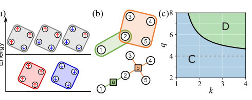
<figcaption class="paper-figure-caption"><b>Fig 1.</b> FIG. 1. Model and role of node degree and hyperedge size. (a) Interaction rule in the simplicial Ising model (SIM). Pos- sible spin configurations for a four-body group are shown along the energy levels. All non-unanimous states share the same excited-state energy, so that ordering requires the si- multaneous alignment of all members. (b) A hypergraph (top) and its factor graph representation (bottom). Each hyperedge (shaded enclosure) of nodes (circle, top) can be mapped into a factor (filled square, bottom) connected to the nodes, i.e., ∂a = {1, 2} and ∂b = {2, 3, 4, 5}. (c) Phase diagram of the SIM on k-regular q-uniform hypergraphs. The solid line is the tri- critical point (TP) line...</figcaption>
</figure>
<figure class="paper-figure-card">
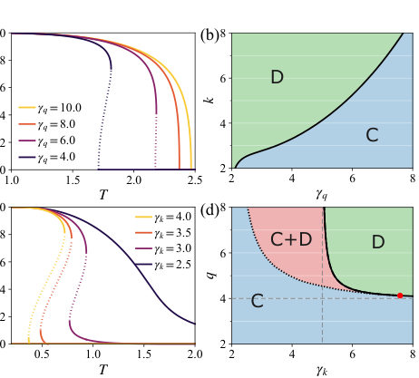
<figcaption class="paper-figure-caption"><b>Fig 2.</b> FIG. 2. Phase transitions on heterogeneous hypergraphs. [(a),(c)] m(T) for size- (a) and degree-heterogeneous (c) cases, with varying γq (at k = 7) and γk (at q = 7). [(b),(d)] Phase diagrams in the (γq, k) (b) and (γk, q) (d) planes. In (d), in addition to C and D regimes, a regime for continuous– discontinuous double transitions (C+D) appears. The black dotted line is the boundary between the C and (C+D) re- gions, the red circle marks the special tricritical point (STP) at which the (C+D) region emerges, and the gray dashed lines show the asymptotes of the TP line, q = 4 and γk = 5, respec- tively.</figcaption>
</figure>
<figure class="paper-figure-card">
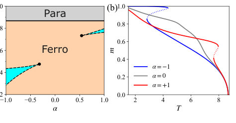
<figcaption class="paper-figure-caption"><b>Fig 3.</b> FIG. 4. Effect of cross-order degree correlations (CODC) on (2, 20)-biuniform (2, 20)-biregular hypergraphs. (a) Phase diagram in the (α, T) plane, where α ∈[−1, 1] controls the CODC (α = +1: pair-hubs and group-hubs coincide; α = −1: pair-hubs and group-hubs are disjoint). The gray and orange regions denote the paramagnetic (Para) and ferromagnetic (Ferro) phases, respectively. The solid line marks the contin- uous transition between the two phases. Within the Ferro phase, the cyan region bounded by dashed lines indicates where an additional discontinuous jump and hysteresis occur. Black circles mark critical points where continuous transition occurs. (b) m(T) for α = −1, 0, and +1.</figcaption>
</figure>
<figure class="paper-figure-card">
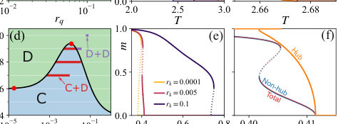
<figcaption class="paper-figure-caption"><b>Fig 4.</b> FIG. 3. Phase transitions on (2, 10)-biuniform k-regular [(a)– (c)] and q-uniform (2, 10)-biregular [(d)–(f)] hypergraphs. [(a),(d)] Phase diagrams in the (rq, k) (a) and (rk, q) (d) planes. Red horizontal bars represent (C+D) region. Purple horizontal bars represent a region for double discontinuous transitions (D+D). [(b),(e)] m(T) for several rq at k = 10 (b) and several rk at q = 7 (e). [(c),(f)] Size-specific (c) and degree-specific (f) magnetizations. (c) mpair, mgroup, and to- tal m for rq = 0.125 from (b). (f) mnon-hub, mhub, and total m for rk = 0.005 from (e); m is almost hidden behind mnon-hub.</figcaption>
</figure>
</div>
<p><strong>Summary.</strong> This work analyzes the phase transitions of the Simplicial Ising Model on hypergraphs with varying structural disorder. By developing a cavity method framework, the authors show that size and degree heterogeneities fundamentally alter the transition type, leading to complex double transitions. The findings highlight the intricate interplay between these structural features in collective ordering phenomena.</p>
<p><strong>Why it may be interesting.</strong> The detailed analysis of phase transitions driven by structural disorder (heterogeneity) in interacting systems is a core topic in statistical mechanics, providing theoretical tools applicable to complex network dynamics.</p>
<details>
<summary>Detailed structure</summary>
<p><strong>Main problem.</strong> The paper investigates how structural heterogeneity, specifically in group size and node degree, influences the collective phase transitions in systems governed by higher-order interactions.</p>
<p><strong>Main result.</strong> Size heterogeneity sharpens the transition via large-group unanimity, while degree heterogeneity softens it; the coexistence of both can lead to complex double transitions and hysteretic regions modulated by cross-order degree correlations.</p>
<p><strong>Method.</strong> The study develops a cavity-method framework and applies it to the Simplicial Ising Model (SIM) on heterogeneous hypergraphs, utilizing the Effective Medium Approximation (EMA) near the critical point.</p>
<p><strong>Model / system.</strong> The system is the Simplicial Ising Model (SIM) defined on heterogeneous hypergraphs. The Hamiltonian involves higher-order interactions ($\delta_{\{S_i\}_{i\in\partial_a}}$) that enforce that all spins within a hyperedge must be identical.</p>
<p><strong>Key observables.</strong> Magnetization ($m$), phase transition types (Continuous (C), Discontinuous (D), Double (C+D)), and Cross-Order Degree Correlation (CODC).</p>
<p><strong>Important parameters / regimes.</strong> Size heterogeneity ($\gamma_q$) and degree heterogeneity ($\gamma_k$), and the cross-order correlation parameter ($\alpha$).</p>
<p><strong>Assumptions / limitations.</strong> The analysis relies on the cavity method, which is exact only on locally treelike hypergraphs, and uses the Effective Medium Approximation (EMA) near the critical point.</p>
<p><strong>Figures summary.</strong> Figures illustrate the phase diagrams showing the emergence of (C+D) regions in planes defined by heterogeneity parameters ($\gamma_q$ vs $k$, $\gamma_k$ vs $q$) and the effect of CODC ($\alpha$ vs $T$).</p>
<p><strong>Paper structure.</strong> The paper builds from the general framework of the SIM on hypergraphs, derives cavity equations, applies EMA, and then systematically analyzes the distinct roles of size and degree heterogeneities, culminating in the effect of cross-order correlations on the phase diagram.</p>
</details>
<details>
<summary>Abstract</summary>
<p>Higher-order interactions admit richer structural heterogeneity than pairwise networks. To understand how heterogeneity impacts collective phenomena we develop a framework based on the cavity method and apply it to the simplicial Ising model on heterogeneous hypergraphs. Unlike in homogeneous structures, group size and node degree play fundamentally different roles: size heterogeneity sharpens the transition via large-group unanimity, while degree heterogeneity softens it as hubs cooperatively seed ordering with non-hubs. Under either type of heterogeneity, continuous--discontinuous double transitions can arise, where the symmetry-breaking continuous transition is driven by pairs or by hubs, respectively. When both heterogeneities coexist, cross-order degree correlations further modulate the phase diagram, with anticorrelation delaying the group-driven discontinuous jump and broadening the hysteretic region. Our results reveal the intricate interplay between size and degree heterogeneities in collective phenomena beyond pairwise interactions.</p>
</details>
<p><sub><a href="#top">↑ back to top</a></sub></p>

<p><a id="paper-2605.30967"></a></p>
<h3 id="evaluating-higher-order-product-formulae-for-molecular-ground-state-energy-estimation"><a href="http://arxiv.org/abs/2605.30967v1">Evaluating higher-order product formulae for molecular ground-state energy estimation</a></h3>
<p><strong>Authors:</strong> Hiromu Abe, Keita Kanno, Ryosuke Kimura, Masahiko Kamoshita, Kosuke Mitarai<br>
<strong>Type:</strong> theory · <strong>Category:</strong> other · <strong>PDF:</strong> <a href="https://arxiv.org/pdf/2605.30967v1">https://arxiv.org/pdf/2605.30967v1</a><br>
<strong>Analysis basis:</strong> full PDF text, analyzed in chunks</p>
<div class="figure-strip-hint">↔ Scroll figures horizontally</div>
<div class="paper-figures-scroll">
<figure class="paper-figure-card">
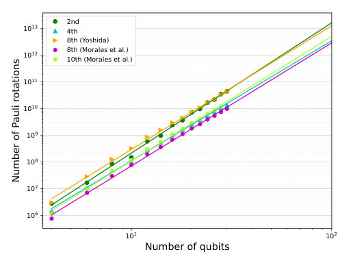
<figcaption class="paper-figure-caption"><b>Fig 1.</b> FIG. 1. For H-chains at the target energy error εE = 1.6 × 10−4 Ha, we plot the total gate count F (number of Pauli rotations) as dots for each qubit count. The colored straight lines show the fitted scaling on logarithmic scales for both axes. Legend entries are, in order, second order (green), conventional fourth order (cyan; labeled “4th” in the figure), eighth order by Yoshida (orange), eighth order by Morales et al. (magenta), and tenth order by Morales et al. (greenyel- low).</figcaption>
</figure>
<figure class="paper-figure-card">
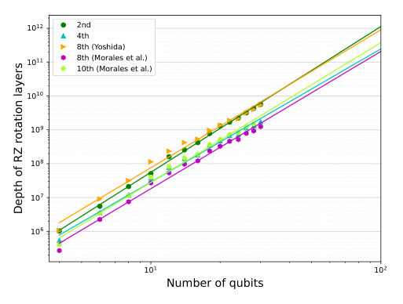
<figcaption class="paper-figure-caption"><b>Fig 2.</b> FIG. 2. For H-chains at the target energy error εE = 1.6 × 10−4 Ha, we plot the depth of RZ-rotation layers as dots for each qubit count. The colored straight lines show the fitted scaling on logarithmic scales for both axes. Legend entries are, in order, second order (green), conventional fourth order (cyan; labeled “4th” in the figure), eighth order by Yoshida (orange), eighth order by Morales et al. (magenta), and tenth order by Morales et al. (greenyellow).</figcaption>
</figure>
<figure class="paper-figure-card">
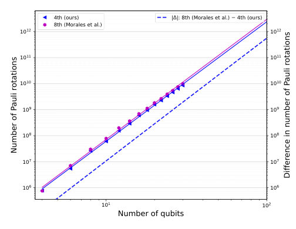
<figcaption class="paper-figure-caption"><b>Fig 3.</b> FIG. 3. As in Fig. 1, we plot the total gate count F at the target energy error εE = 1.6 × 10−4 Ha together with the fit- ted scaling on log–log axes. We compare the eighth-order product formula by Morales et al. (magenta, “8th (Morales et al.)”) with our newly constructed fourth-order product formula (blue, “4th (ours)”). The dashed curve shows the ab- solute difference between the two estimated total gate counts, plotted on the right axis.</figcaption>
</figure>
<figure class="paper-figure-card">
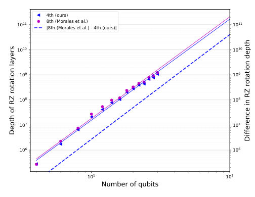
<figcaption class="paper-figure-caption"><b>Fig 4.</b> FIG. 4. As in Fig. 2, we plot the depth of RZ-rotation lay- ers at the target energy error εE = 1.6 × 10−4 Ha together with the fitted scaling on log–log axes. We compare our new fourth-order product formula (blue, “4th (ours)”) with the eighth-order product formula by Morales et al. (magenta, “8th (Morales et al.)”). The dashed curve shows the absolute difference between the two estimated depths of RZ-rotation layers, plotted on the right axis.</figcaption>
</figure>
<figure class="paper-figure-card">
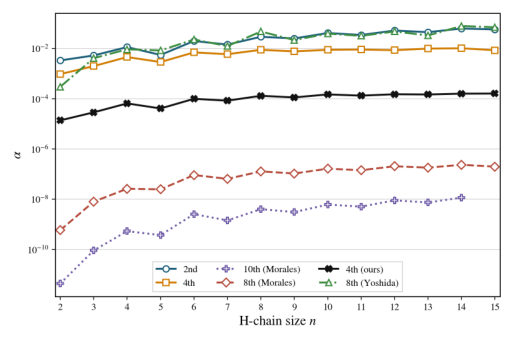
<figcaption class="paper-figure-caption"><b>Fig 5.</b> FIG. 5. Values of α obtained by fitting with p fixed to the order of each product formula for the H-chain instances con- sidered in this work.</figcaption>
</figure>
</div>
<p><strong>Summary.</strong> This paper rigorously compares the resource costs (gate count and circuit depth) of different higher-order product formulae for simulating molecular ground-state energies. Using hydrogen chains as benchmarks, the authors demonstrate that the optimal formula depends on the required accuracy, proposing a new fourth-order method that achieves superior performance over existing state-of-the-art formulae near chemical accuracy.</p>
<p><strong>Why it may be interesting.</strong> This work directly addresses the practical resource estimation for quantum chemistry simulations, providing concrete guidelines on selecting the most efficient quantum circuit decomposition method for molecular energy calculations.</p>
<details>
<summary>Detailed structure</summary>
<p><strong>Main problem.</strong> The paper evaluates and compares the computational cost of various deterministic higher-order product formulae used to estimate the ground-state energy of molecules via quantum simulation.</p>
<p><strong>Main result.</strong> A newly constructed fourth-order product formula was shown to outperform established eighth-order formulae in minimizing both the total gate count and the RZ-layer depth near chemical accuracy.</p>
<p><strong>Method.</strong> The cost is evaluated by estimating the total gate count and the depth of RZ-rotation layers required to achieve a target energy error ($\epsilon_E$) using perturbative analysis.</p>
<p><strong>Model / system.</strong> The benchmarks use one-dimensional hydrogen chains ($   ext{H}<em 15>2$ to $  ext{H}</em>$) modeled by a Hamiltonian approximated via product formulae for the time-evolution operator.</p>
<p><strong>Key observables.</strong> Total gate count ($F$), depth of RZ-rotation layers ($D_{	ext{RZ}}$), and the energy error ($\epsilon_E$).</p>
<p><strong>Important parameters / regimes.</strong> Target energy error ($\epsilon_E = 1.6 	imes 10^{-4} 	ext{ Ha}$), formal order of the product formula ($p$), and system size ($N$).</p>
<p><strong>Assumptions / limitations.</strong> The analysis uses a perturbative method to estimate eigenvalue error, and the layer depth estimate neglects the depth contribution from the Clifford basis-change circuit.</p>
<p><strong>Figures summary.</strong> Figures compare the total gate count and RZ-layer depth for different formulae across H-chain sizes, and show the scaling relationships between these costs and system size.</p>
<p><strong>Paper structure.</strong> The paper first analyzes the phase estimation error scaling, then details the cost metrics (gate count and layer depth) derived from product formulae approximations, compares various orders (2nd, 4th, 8th, 10th), and concludes by proposing and validating a new optimized fourth-order formula.</p>
</details>
<details>
<summary>Abstract</summary>
<p>We evaluate deterministic higher-order product formulae for molecular ground-state energy estimation. Motivated by recent fault-tolerant architectures in which non-Clifford operations may be generated more locally and cheaply than in conventional assumptions, we re-examine such formulae as practical candidates for quantum chemistry. Using one-dimensional hydrogen chains from $\mathrm{H}_2$ to $\mathrm{H}_{15}$ as benchmarks, we estimate both the total gate count and the depth of $R_Z$-rotation layers required to reach a target energy error. To make this comparison feasible at larger system sizes, we use a perturbative method to estimate the eigenvalue error induced by each product formula and thereby evaluate the cost of the corresponding phase-estimation procedure. Among the previously considered formulae, the eighth-order construction introduced by Morales et al. [M. E. S. Morales et al., "Greatly improved higher-order product formulae for quantum simulation," arXiv:2210.15817v2 (2024)] minimizes both cost metrics in the benchmark at a chemically relevant target error. We also find that increasing the formal order does not automatically reduce the total cost: near chemical accuracy, the tenth-order formula introduced in the same work can be less efficient than the eighth-order one. Motivated by this observation, we construct a new fourth-order formula; it achieves the lowest total gate count among the formulae considered for all H-chain instances near chemical accuracy and over much of the 0.1-10 mHa target-error window for most instances, while also reducing the $R_Z$-layer depth. These results clarify how deterministic higher-order product formulae should be selected for molecular ground-state energy estimation.</p>
</details>
<p><sub><a href="#top">↑ back to top</a></sub></p>

<p><a id="paper-2605.30866"></a></p>
<h3 id="generative-quantum-data-embeddings-for-supervised-learning"><a href="http://arxiv.org/abs/2605.30866v1">Generative Quantum Data Embeddings for Supervised Learning</a></h3>
<p><strong>Authors:</strong> Jaewoong Heo, Daniel K. Park<br>
<strong>Type:</strong> theory · <strong>Category:</strong> quantum information and computing · <strong>PDF:</strong> <a href="https://arxiv.org/pdf/2605.30866v1">https://arxiv.org/pdf/2605.30866v1</a><br>
<strong>Analysis basis:</strong> full PDF text, analyzed in chunks</p>
<div class="figure-strip-hint">↔ Scroll figures horizontally</div>
<div class="paper-figures-scroll">
<figure class="paper-figure-card">
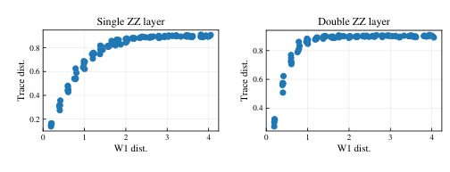
<figcaption class="paper-figure-caption"><b>Fig 1.</b> FIG. 1. Demonstration of the trace-distance upper bound as a func- tion of the input-space 1-Wasserstein distance. The simulations use a single-layer ZZ feature map (left) and a double-layer ZZ feature map (right). To control the Wasserstein distance between the two classes, the distribution of one class is fixed while the other is spatially trans- lated.</figcaption>
</figure>
<figure class="paper-figure-card">
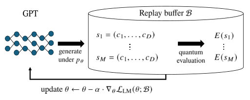
<figcaption class="paper-figure-caption"><b>Fig 2.</b> FIG. 2. Overview of the Energy-based Generative Architecture Search (EGAS) training. In each iteration, a generative pre-trained transformer (GPT) parameterized by 𝜃autoregressively samples 𝑀 candidate sequences, 𝑠1, . . . , 𝑠𝑀. Each sequence is an ordered length- 𝐷list of subcircuit tokens drawn from the predefined pool C. The sequences are translated into quantum embedding circuits and evalu- ated using a quantum simulator or hardware. This evaluation assigns an energy value 𝐸(𝑠𝑚) to each circuit based on the pairwise fidelity surrogate loss. The evaluated sequence-energy pairs (𝑠𝑚, 𝐸(𝑠𝑚)) are stored in a replay buffer B. During the update phase, the GPT pa- rameters are updated by a...</figcaption>
</figure>
<figure class="paper-figure-card">
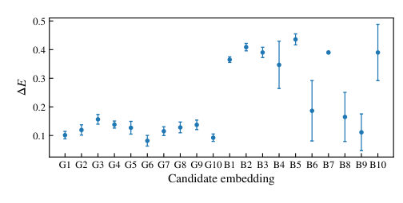
<figcaption class="paper-figure-caption"><b>Fig 3.</b> FIG. 3. Surrogate energy reduction (Δ𝐸) achieved by continuous bias refinement on the Phishing Website dataset. The x-axis labels 𝐺and 𝐵denote the ten unique lowest-energy and ten unique highest-energy circuit architectures identified during EGAS, respectively. Each can- didate embedding was refined ten times. Blue circles represent the mean energy reduction, and error bars indicate the standard deviation over repeated runs.</figcaption>
</figure>
<figure class="paper-figure-card">
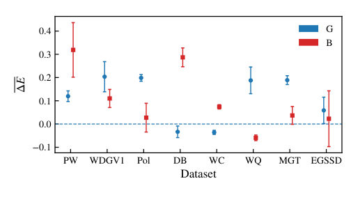
<figcaption class="paper-figure-caption"><b>Fig 4.</b> FIG. 4. Continuous parameter refinement across eight datasets: PW, WDGV1, Pol, DB, WC, WQ, MGT, and EGSSD. The y-axis shows the mean surrogate energy reduction Δ𝐸. For each dataset and group, ten embeddings were considered, each with ten repetitions, and the summary statistics are plotted. Blue circles and error bars represent the mean and standard deviation for group 𝐺, and red squares and error bars represent the mean and standard deviation for group 𝐵. The dashed line at 𝑦= 0 is used to indicate the sign of the bias refinement effect.</figcaption>
</figure>
<figure class="paper-figure-card">
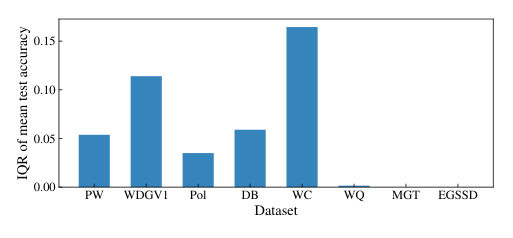
<figcaption class="paper-figure-caption"><b>Fig 5.</b> FIG. 6. Dataset-level dispersion of QKSVM test accuracy across the evaluated quantum embeddings. For each evaluated embedding, we first compute the mean test accuracy over the ten train-test splits. For each dataset, the bar height gives the interquartile range (IQR) of these mean accuracies over the fixed quantum baselines (ZZ and NQE) and the EGAS-derived candidate embeddings from the 𝐺and 𝐵groups, both before and after bias refinement. The classical linear SVM baseline is excluded from this dispersion. A larger IQR indi- cates stronger variation in classification accuracy across the evaluated embeddings, whereas a smaller IQR indicates relative insensitivity to the embedding choice.</figcaption>
</figure>
</div>
<p><strong>Summary.</strong> This paper introduces a generative, energy-based framework to optimize quantum data embeddings for supervised learning, moving beyond fixed circuit designs. It uses an LLM to search for optimal quantum circuits and refines them with learnable biases. Crucially, it provides a theoretical bound linking the achievable quantum classification error to the 1-Wasserstein distance of the input data, offering a diagnostic tool for embedding optimization.</p>
<p><strong>Why it may be interesting.</strong> The rigorous connection drawn between the achievable quantum classification error and the classical Wasserstein distance provides a powerful, data-geometry-informed diagnostic tool for quantum algorithm design.</p>
<details>
<summary>Detailed structure</summary>
<p><strong>Main problem.</strong> The core problem is improving the performance of supervised quantum machine learning (QML) when using classical data inputs by optimizing the quantum data embedding structure.</p>
<p><strong>Main result.</strong> The proposed generative framework successfully optimizes embedding structures, and the achievable performance gains are diagnosable using the Wasserstein distance of the underlying classical data geometry.</p>
<p><strong>Method.</strong> The authors use an energy-based generative learning framework, employing a Large Language Model (LLM) to synthesize and optimize quantum circuit sequences, guided by a fidelity-based surrogate objective.</p>
<p><strong>Model / system.</strong> The system involves mapping classical inputs $x$ to quantum states $
ho_{\Phi}(x)$ via an embedding circuit $\Phi$. The optimization targets the structure of $\Phi$ itself, moving beyond fixed ansatzes.</p>
<p><strong>Key observables.</strong> QKSVM classification accuracy, the trace distance $D_{tr}(
ho_+(\Phi), 
ho_-(\Phi))$, and the 1-Wasserstein distance $W_1(\hat{P}_+(x), \hat{P}_-(x))$ between class-conditional distributions.</p>
<p><strong>Important parameters / regimes.</strong> The fidelity-based surrogate objective $\ell_{ij}(\Phi)$ and the geometric bound derived from the Wasserstein distance.</p>
<p><strong>Assumptions / limitations.</strong> The process separates discrete architecture search (LLM/EGAS) from continuous parameter refinement (learnable bias function), and the performance is bounded by the geometry of the classical input space.</p>
<p><strong>Figures summary.</strong> Figures demonstrate the EGAS training process, the reduction in surrogate energy ($\Delta E$) upon refinement, and split-wise comparisons of QKSVM accuracy versus classical baselines.</p>
<p><strong>Paper structure.</strong> The paper develops from establishing the fundamental limit on class separation via the trace distance, proposing the generative search (EGAS) using fidelity loss, and finally refining the best structures using learnable biases, all while providing a geometric diagnostic via the Wasserstein distance.</p>
</details>
<details>
<summary>Abstract</summary>
<p>Many practically relevant applications of quantum machine learning involve classical data, for which performance depends critically on how inputs are embedded into quantum states. Yet the use of a fixed embedding circuit ansatz remains standard practice. We propose an energy-based generative learning framework that synthesizes gate sequences to optimize embedding structures and refine data-tailored parameters, using a fidelity-based surrogate objective to guide the search toward improved class distinguishability. Empirically, the method improves classification performance across diverse settings, while also revealing datasets where architecture search within the present embedding family yields only limited additional gains. We explain this saturation by deriving bounds on the achievable empirical risk in terms of the Wasserstein distance in the input space, showing that classical data geometry provides an \emph{a priori} diagnostic for regimes in which substantial gains from embedding optimization are unlikely. The results establish a practically useful and theoretically motivated framework for searching effective quantum data embeddings through generative optimization, with the attainable gains diagnosed through the geometry of the underlying classical data.</p>
</details>
<p><sub><a href="#top">↑ back to top</a></sub></p>

<p><a id="paper-2605.30768"></a></p>
<h3 id="geometric-dependence-of-critical-current-variation-in-alalomath566mathal-josephson-junctions-a-model-based-analysis"><a href="http://arxiv.org/abs/2605.30768v1">Geometric dependence of critical-current variation in Al/AlO${\rm _x}$/Al Josephson junctions: a model-based analysis</a></h3>
<p><strong>Authors:</strong> K. Kakuyanagi, N. Teran, H. Toida, S. Saito<br>
<strong>Type:</strong> both · <strong>Category:</strong> other · <strong>PDF:</strong> <a href="https://arxiv.org/pdf/2605.30768v1">https://arxiv.org/pdf/2605.30768v1</a><br>
<strong>Analysis basis:</strong> full PDF text, analyzed in chunks</p>
<div class="figure-strip-hint">↔ Scroll figures horizontally</div>
<div class="paper-figures-scroll">
<figure class="paper-figure-card">
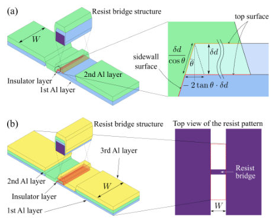
<figcaption class="paper-figure-caption"><b>Fig 1.</b> FIG. 1. (a) Cross-sectional schematic of the Al/AlOx/Al bilayer junc- tion formed by the Dolan-bridge (purple) double-angle deposition. The blue (green) layer represents the first (second) deposited Al film. The surfaces highlighted in red correspond to the junction interfaces with area S, and the perimeter of these surfaces corresponds to the junction-edge length L. The magnified schematic illustrates the rela- tionship among the deposition angle θ, the film-thickness fluctuation δd, and the junction interfaces (red and orange). The sidewall sur- face and the top surface constitute the junction interfaces. When the film thickness increases by δd, the junction interface shifts from the line shown...</figcaption>
</figure>
<figure class="paper-figure-card">
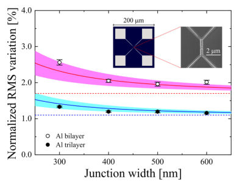
<figcaption class="paper-figure-caption"><b>Fig 2.</b> FIG. 2. Geometry dependence of the measured normalized RMS variation and the corresponding model fitting results. White (black) circles represent the measured data for the bilayer (trilayer) junc- tions, and the error bars are estimated from the unbiased sample vari- ance. The red (blue) solid line represents the model fitting results for the bilayer (trilayer) junctions. The dashed horizontal lines indi- cate the asymptotic values of the normalized RMS variation for the bilayer and trilayer junctions, which correspond to the contribution from film-thickness fluctuations. The magenta (cyan) shaded region indicates the uncertainty of the fitted curve for the bilayer (trilayer) junctions,...</figcaption>
</figure>
<figure class="paper-figure-card">
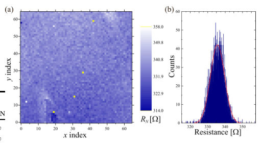
<figcaption class="paper-figure-caption"><b>Fig 3.</b> FIG. 3. Results of room-temperature resistance measurements for the 9.75 mm square junction array. (a) Two-dimensional map of the measured resistance. The four yellow points correspond to open or shorted junctions, which are excluded from the statistical analysis. (b) Histogram of the resistance values for all valid junctions. The red dashed line is a Gaussian curve shown as a guide to the eye.</figcaption>
</figure>
<figure class="paper-figure-card">

<figcaption class="paper-figure-caption"><b>Fig 4.</b> FIG. 4. (a) Schematic of three representative regions: 4.5 mm square (red), 3.0 mm square (green), and 1.5 mm square (cyan). The dataset is the same as that in Fig. 3. These regions are chosen to minimize standard deviations. (b–d) Corresponding histograms of the measured resistance values in these three regions. The dashed lines are Gaussian curves shown as guides to the eye.</figcaption>
</figure>
</div>
<p><strong>Summary.</strong> This work investigates the sources of variation in the critical current of Al/AlO_x/Al Josephson junctions essential for quantum circuit scaling. Through model-based statistical analysis, the authors pinpoint film thickness fluctuations as the main cause of variation. They demonstrate that optimizing the deposition angle to 30 degrees significantly improves junction uniformity, providing crucial guidelines for nanofabrication.</p>
<p><strong>Why it may be interesting.</strong> While focused on superconducting materials, the rigorous statistical modeling of geometric variation and the quantitative link between deposition parameters (angle) and device uniformity are highly relevant to engineering quantum devices where nanoscale precision is paramount.</p>
<details>
<summary>Detailed structure</summary>
<p><strong>Main problem.</strong> The primary challenge addressed is achieving uniform critical current across Josephson junctions, which is critical for scaling superconducting quantum circuits.</p>
<p><strong>Main result.</strong> The analysis shows that fluctuations in the Al film thickness are the dominant source of critical current variation, and using a 30-degree deposition angle significantly improves junction uniformity.</p>
<p><strong>Method.</strong> The study combines statistical analysis of room-temperature tunnel resistance with a model-based approach that decomposes the total variance into contributions from different physical sources.</p>
<p><strong>Model / system.</strong> The system is the Al/AlO_x/Al Josephson junction fabricated using the Dolan-bridge technique. The model relates the critical current variation to the variance of the junction's tunnel resistance, decomposing this variance based on geometric factors and film thickness fluctuations.</p>
<p><strong>Key observables.</strong> Critical current (I_C), room-temperature tunnel resistance (R_N), relative standard deviation (r.s.d.) of I_C, and the geometric factor f_2(theta, N_L).</p>
<p><strong>Important parameters / regimes.</strong> Deposition angle (theta), junction width (W), number of deposited layers (N_L), and the size of the measurement region (e.g., 1.5 mm).</p>
<p><strong>Assumptions / limitations.</strong> The analysis assumes that the variance can be decomposed into statistically independent components, and that thickness fluctuations of different layers are uncorrelated.</p>
<p><strong>Figures summary.</strong> Figures illustrate cross-sectional schematics of the junctions, show normalized RMS variation vs. junction width, and present resistance histograms for different sized measurement regions demonstrating decreasing r.s.d. with smaller regions.</p>
<p><strong>Paper structure.</strong> The paper establishes the need for uniform I_C, models the variance of the junction resistance as a sum of independent components (geometry-independent, thickness-related, etc.), derives a geometric factor quantifying thickness effects, and then uses statistical analysis on fabricated junctions to identify thickness variation as dominant and quantify the improvement achieved by specific deposition angles.</p>
</details>
<details>
<summary>Abstract</summary>
<p>Achieving uniform critical current across Josephson junctions is essential for the large-scale integration of superconducting quantum circuits. In this work, we statistically analyzed the variation of the critical current of Al/AlO${\rm _x}$/Al junctions using room-temperature tunnel resistance statistics, and identified the dominant contribution among the modeled sources of the variation based on their dependence on geometry and deposition conditions of junctions. Our model-based analysis reveals that fluctuations in the Al film thickness play the dominant role among the modeled contributing factors. Based on this analysis, we found that, in Dolan-bridge double-angle deposition, adopting a deposition angle of 30-degree for bilayer junctions significantly improves uniformity, yielding a relative standard deviation of 1.2% (0.5%) across a 9.75 mm (1.5 mm) square region.</p>
</details>
<p><sub><a href="#top">↑ back to top</a></sub></p>

<p><a id="paper-2605.31544"></a></p>
<h3 id="more-efficient-cliffordt-synthesis-for-small-angle-rotations-and-application-to-trotterization"><a href="http://arxiv.org/abs/2605.31544v1">More efficient Clifford+T synthesis for small-angle rotations and application to Trotterization</a></h3>
<p><strong>Authors:</strong> Marius Bothe, Christoph Sünderhauf, Michael J. Witham, Earl T. Campbell, Nick S. Blunt<br>
<strong>Type:</strong> theory · <strong>Category:</strong> quantum information and computing · <strong>PDF:</strong> <a href="https://arxiv.org/pdf/2605.31544v1">https://arxiv.org/pdf/2605.31544v1</a><br>
<strong>Analysis basis:</strong> full PDF text, analyzed in chunks</p>
<div class="figure-strip-hint">↔ Scroll figures horizontally</div>
<div class="paper-figures-scroll">
<figure class="paper-figure-card">

<figcaption class="paper-figure-caption"><b>Fig 1.</b> Figure 1. Average T gate counts to implement a rotation channel Zθ in the ancilla-free scheme for two different formulations of our results, first in terms of quasi-probability mixtures with L1 norm λ (results marked as “×”), and second in terms of strict probability mixtures with diamond norm error ε⋄(results marked as “+”). The black dashed-dotted line indicates the previous angle-independent formula for the mixed diagonal approximation from Kliuchnikov et al [19]. Data points represent the obtained results for different angles, θ, for the quasi-probability and quantum channel approaches. We see that, while results for all angles eventually converge to the angle-dependent formula, for...</figcaption>
</figure>
<figure class="paper-figure-card">

<figcaption class="paper-figure-caption"><b>Fig 2.</b> Figure 2. Average T gate cost to implement a first-order Trotterization circuit using the quasi-probability Clifford+T approach, as a function of Trotter step size. The system is the Fe(II)-Porphyrin complex in a (32e,29o) active space and using localized orbitals. The total evolution time is fixed to T = 100 Ha−1. The ancilla-free Clifford+T synthesis scheme is used. Results in blue show the costing results using the previous angle-independent formula, while the results in red used our angle-dependent formula. The cost of Trotterization becomes independent of the step size in the limit of small steps sizes, while the cost is reduced by two orders of magnitude even for large step sizes....</figcaption>
</figure>
<figure class="paper-figure-card">

<figcaption class="paper-figure-caption"><b>Fig 3.</b> Figure 3. Regions of the complex plane for selecting the under- and over-rotation in the mixed diagonal approximation of Ref. [19]. The target angle is θ, and γ = arcsin( p</figcaption>
</figure>
<figure class="paper-figure-card">

<figcaption class="paper-figure-caption"><b>Fig 4.</b> Figure 4. Schematic overview of methods for various regimes of θ and δ = λ −1. (a) shows the preferable method in each regime. In the main plot, Figure 1, this crossover is visible at δ just below θ2. (b) summarizes our analysis in Section V of the method with the under-rotation fixed as the identity. Results are approximately the same for δ = ε⋄, see Appendix F.</figcaption>
</figure>
<figure class="paper-figure-card">

<figcaption class="paper-figure-caption"><b>Fig 5.</b> Figure 5. Example region, defined in Eq. (51), for selecting the over-rotation with quasi-probabilities. Each unitary with upper left entry u = x+iy inside the shaded region has a sample complexity λ, Eq. (43), within the desired target λmax. Here we take θ = 0.1 and λmax = 1.08 as an illustrative example. The shading indicates the sampling probability p, Eq. (40) (and thereby average T count, p·T-count), which varies within the region. The lower end of the region is at the target angle θ due to the assumption φ &gt; θ, while the upper end of the region is at angle α, Eq. (44). As λmax increases, α and the area size increase.</figcaption>
</figure>
</div>
<p><strong>Summary.</strong> This work significantly improves the theoretical understanding of synthesizing rotation gates for fault-tolerant quantum computing. By developing angle-dependent resource estimation formulas, the authors demonstrate that the T gate cost for small rotations scales favorably with $   heta^2$, rather than remaining high and independent of the angle. This has major implications for the resource requirements of quantum simulation algorithms like Trotterization.</p>
<p><strong>Why it may be interesting.</strong> The findings provide concrete, resource-aware improvements for compiling quantum simulation circuits, directly impacting the feasibility estimates for fault-tolerant quantum computation.</p>
<details>
<summary>Detailed structure</summary>
<p><strong>Main problem.</strong> The paper addresses the high resource overhead associated with synthesizing arbitrary-angle rotation gates ($Z_	heta$) using Clifford+T gates in fault-tolerant quantum computation.</p>
<p><strong>Main result.</strong> They show that for small rotation angles ($    heta$), the T gate cost can be significantly reduced from an angle-independent scaling to $ ilde{O}(    heta^2/\delta)$, and they develop scalable quasi-probability methods for resource estimation.</p>
<p><strong>Method.</strong> The authors employ advanced techniques involving quasi-probability and probability mixtures of quantum channels, alongside optimizing the Linear Combination of Channels (LCC) representation for the rotation gate.</p>
<p><strong>Model / system.</strong> The focus is on synthesizing the $RZ(	heta) = e^{i	heta Z}$ rotation gate using a Clifford+T gate set, which is critical for implementing quantum algorithms like Trotterization.</p>
<p><strong>Key observables.</strong> T gate cost (resource estimate), average T gate count, and the total error ($\epsilon_{	ext{total}}$).</p>
<p><strong>Important parameters / regimes.</strong> Rotation angle $    heta$, error parameter $\delta$, and the Trotter step size $t$.</p>
<p><strong>Assumptions / limitations.</strong> The analysis relies on comparing quasi-probability mixtures ($\lambda^{-1}$) against standard probability mixtures ($\epsilon_{\diamond}$), and assumes the applicability of the LCC representation.</p>
<p><strong>Figures summary.</strong> Figures compare average T gate counts across different regimes ($  heta$ vs. $\delta$), illustrating the crossover from angle-independent to angle-dependent scaling, and showing the advantage of quasi-probabilities over standard methods.</p>
<p><strong>Paper structure.</strong> The paper builds from initial LCC representations to probability/quasi-probability mixtures, derives angle-dependent resource formulas, and applies these results to show cost reductions for Trotterization circuits.</p>
</details>
<details>
<summary>Abstract</summary>
<p>Clifford+T synthesis of rotation gates is an important routine in fault-tolerant quantum compilation. While Clifford+T synthesis is scalable, it has a high overhead of tens of T gates per rotation in practice, translating to high resource estimates for many fault-tolerant algorithms. However, these well-known results, including those using probabilistic mixtures [Quantum 7, 1208 (2023)], are independent of the rotation angle $θ$, requiring $O(\log 1/δ)$ T gates. We show that it is possible to do much better for small angles, reducing the T cost to $\tilde O(θ^2/δ)$, and returning to existing $O(\log1/δ)$ results in the worst case. This is particularly important since many algorithms, such as Trotterization, are dominated by small-angle rotations. Further, we perform a detailed theoretical and numerical study of quasi-probabilities, which can further reduce the total T cost of large circuits by orders of magnitude with only a small overhead in sample complexity. We also develop a scheme based on quasi-probability mixtures of Clifford+T fallback channels. We derive new $θ$-dependent formulas that can be used for resource estimation of fault-tolerant quantum algorithms. As an application of our results, we show that the gate cost of Trotterization circuits compiled to a Clifford+T gate set is constant in the small Trotter step size limit, and can be reduced by orders of magnitude even for large step sizes. The cost of fault-tolerant Trotterization for a variety of applications should be re-examined in light of these results. Our work dispels the widely-stated claim that Clifford+T rotation synthesis has a high cost independent of $θ$, and further develops a scalable quasi-probability method for rotation synthesis. We also expect our results to bring forward useful early fault-tolerant quantum computing by reducing required magic state resources.</p>
</details>
<p><sub><a href="#top">↑ back to top</a></sub></p>

<p><a id="paper-2605.31374"></a></p>
<h3 id="multi-point-functions-of-a-full-plane-two-state-fuzzy-math582math-potts-model"><a href="http://arxiv.org/abs/2605.31374v1">Multi-point functions of a full-plane two-state fuzzy $4$-Potts model</a></h3>
<p><strong>Authors:</strong> Hong-Bin Chen, Jiaming Xia<br>
<strong>Type:</strong> theory · <strong>Category:</strong> statistical mechanics · <strong>PDF:</strong> <a href="https://arxiv.org/pdf/2605.31374v1">https://arxiv.org/pdf/2605.31374v1</a><br>
<strong>Analysis basis:</strong> full PDF text, analyzed in chunks</p>
<div class="figure-strip-hint">↔ Scroll figures horizontally</div>
<div class="paper-figures-scroll">
<figure class="paper-figure-card">

<figcaption class="paper-figure-caption"><b>Fig 1.</b> Low-resolution page preview, page 2</figcaption>
</figure>
<figure class="paper-figure-card">

<figcaption class="paper-figure-caption"><b>Fig 2.</b> Low-resolution page preview, page 3</figcaption>
</figure>
<figure class="paper-figure-card">

<figcaption class="paper-figure-caption"><b>Fig 3.</b> Low-resolution page preview, page 4</figcaption>
</figure>
<figure class="paper-figure-card">

<figcaption class="paper-figure-caption"><b>Fig 4.</b> Low-resolution page preview, page 5</figcaption>
</figure>
<figure class="paper-figure-card">

<figcaption class="paper-figure-caption"><b>Fig 5.</b> Low-resolution page preview, page 6</figcaption>
</figure>
</div>
<p><strong>Summary.</strong> This theoretical paper analyzes the critical behavior of the fuzzy 4-Potts model on the plane. It proves that the model's multi-point correlation functions converge to explicit, conformally covariant forms characteristic of Coulomb gas theories. The work establishes the continuum limit of the magnetization field, providing deep insights into the scaling properties of lattice statistical models near criticality.</p>
<p><strong>Why it may be interesting.</strong> The rigorous connection between lattice statistical mechanics models (like the Potts model) and continuous field theories (like the GFF/CFT) is fundamental to understanding critical phenomena in many physical systems, including those relevant to quantum many-body physics.</p>
<details>
<summary>Detailed structure</summary>
<p><strong>Main problem.</strong> The study focuses on determining the scaling limits of multi-point spin correlation functions for the full-plane two-state fuzzy 4-Potts model.</p>
<p><strong>Main result.</strong> The even multi-point spin correlation functions converge to explicit conformally covariant Coulomb-gas type neutral charge sums, and the rescaled magnetization field converges in law to a continuum field $\Phi_0$.</p>
<p><strong>Method.</strong> The proof combines advanced techniques including the Baxter-Kelland-Wu coupling, the convergence of the six-vertex height function to the Gaussian Free Field (GFF), and a rigorous charge-completion mechanism.</p>
<p><strong>Model / system.</strong> The model is the full-plane two-state fuzzy 4-Potts model, derived from assigning spins to open clusters of a critical q=4 random-cluster configuration, which is equivalent to the single-spin projection of the isotropic Ashkin-Teller model at its Potts point.</p>
<p><strong>Key observables.</strong> Multi-point spin correlation functions, the rescaled magnetization field ($\Phi_\delta$), and their limiting moments ($M_n(h)$).</p>
<p><strong>Important parameters / regimes.</strong> The critical point ($p_c = 2/3$), the scaling factor $f(\delta) \sim \delta^{1/8}$, and the limit $\delta 	o 0$ (the continuum limit).</p>
<p><strong>Assumptions / limitations.</strong> The analysis relies on the convergence of the six-vertex height function to the GFF and the ability to establish convergence in law via moment matching in Sobolev spaces.</p>
<p><strong>Paper structure.</strong> The paper proceeds by first establishing the convergence of even multi-point functions to a Coulomb-gas sum (Theorem 2.2), then defining the continuum limit of the magnetization field ($\Phi_\delta 	o \Phi_0$ in $H^{-s}$), and finally completing the proof by deriving necessary combinatorial and scaling relations (A, B, C, D) to confirm the final scaling limit (Proposition 3.1).</p>
</details>
<details>
<summary>Abstract</summary>
<p>We study the full-plane two-state fuzzy $4$-Potts model, obtained by assigning independent balanced $\{\pm1\}$ spins to the open clusters of a critical $q=4$ random-cluster configuration. This model corresponds exactly to the single-spin projection of the isotropic Ashkin-Teller model at its Potts point. We prove that, after proper normalization, all even multi-point spin correlation functions converge to explicit conformally covariant Coulomb-gas type neutral charge sums. As a consequence, we prove convergence in law of the rescaled magnetization field and identify the moments of the limiting field. The proof combines the Baxter-Kelland-Wu coupling, convergence of the six-vertex height function to the Gaussian free field, and a charge-completion mechanism: an enlarged discrete sum over charge assignments with total charge in $4\mathbb Z$ produces a combinatorial cancellation of connection patterns, while only the neutral charge sector survives in the scaling limit.</p>
</details>
<p><sub><a href="#top">↑ back to top</a></sub></p>

<p><a id="paper-2605.30752"></a></p>
<h3 id="ni-o-hybridization-driven-electronic-reconstruction-across-the-superconducting-dome-in-an-infinite-layer-nickelate"><a href="http://arxiv.org/abs/2605.30752v1">Ni-O hybridization-driven electronic reconstruction across the superconducting dome in an infinite-layer nickelate</a></h3>
<p><strong>Authors:</strong> Chi Sin Tang, Shengwei Zeng, Xing Gao, Zhaoyang Luo, Xiongfang Liu, Zhi Shiuh Lim, Saurav Prakash, Ping Yang, Caozheng Diao, Xinmao Yin, Changjian Li, Huajun Liu, Mark B. H. Breese, A. Ariando<br>
<strong>Type:</strong> experiment · <strong>Category:</strong> strongly correlated electrons · <strong>PDF:</strong> <a href="https://arxiv.org/pdf/2605.30752v1">https://arxiv.org/pdf/2605.30752v1</a><br>
<strong>Analysis basis:</strong> full PDF text, analyzed in chunks</p>
<div class="figure-strip-hint">↔ Scroll figures horizontally</div>
<div class="paper-figures-scroll">
<figure class="paper-figure-card">

<figcaption class="paper-figure-caption"><b>Fig 1.</b> Figure 2(a) shows representative O K-edge spectra of La0.82Ca0.18NiO2 measured at 30 K and</figcaption>
</figure>
<figure class="paper-figure-card">

<figcaption class="paper-figure-caption"><b>Fig 2.</b> Fig. 1: Doping-dependent O K-edge spectra. (a) Representative O K-edge spectra</figcaption>
</figure>
<figure class="paper-figure-card">

<figcaption class="paper-figure-caption"><b>Fig 3.</b> Fig. 2: Temperature-dependent O K-edge spectra. (a) Representative XAS spectra of</figcaption>
</figure>
<figure class="paper-figure-card">

<figcaption class="paper-figure-caption"><b>Fig 4.</b> Fig. 3: Ni L3-edge XAS spectra. (a) Ni L3-edge from the undoped through the over-doped</figcaption>
</figure>
</div>
<p><strong>Summary.</strong> This experimental study investigates the electronic structure of infinite-layer nickelates across their superconducting dome using X-ray Absorption Spectroscopy. The researchers found that the superconducting state correlates with a doping-induced, orbital-selective crossover in Ni-O hybridization. This work provides a key orbital-resolved mechanism linking electronic structure changes to the superconducting properties.</p>
<p><strong>Why it may be interesting.</strong> The direct link established between measurable spectroscopic signatures (orbital hybridization) and macroscopic superconducting behavior provides a powerful experimental handle for understanding correlated electron physics in unconventional superconductors.</p>
<details>
<summary>Detailed structure</summary>
<p><strong>Main problem.</strong> The study aims to understand how the electronic structure of infinite-layer nickelates evolves with hole doping, specifically linking these changes to the superconducting dome.</p>
<p><strong>Main result.</strong> A doping-dependent orbital-selective crossover in Ni-O covalency, evidenced by spectral weight redistribution, was found to coincide with transport anomalies like the Hall coefficient sign reversal and the reduction of the superconducting critical temperature.</p>
<p><strong>Method.</strong> The research utilized X-ray Absorption Spectroscopy (XAS) at the O K-edge and Ni L-edge, combined with temperature-dependent measurements and X-ray Linear Dichroism (XLD).</p>
<p><strong>Model / system.</strong> The physical system is the infinite-layer nickelate $   ext{La}_{1-x}   ext{Ca}_x   ext{NiO}_2$, which serves as a cuprate analogue for studying high-temperature superconductivity.</p>
<p><strong>Key observables.</strong> O K-edge spectral weight redistribution (especially features 'a' and 'b'), Ni $L_3$-edge intensity, Hall coefficient sign, and superconducting critical temperature ($T_c$).</p>
<p><strong>Important parameters / regimes.</strong> Hole doping concentration ($x$), temperature ($T$), and the doping range $0.18 \le x \le 0.27$ where superconductivity occurs.</p>
<p><strong>Assumptions / limitations.</strong> The analysis assumes that the observed spectral weight changes directly reflect orbital reorganization and covalency changes in the Ni-O bonds, and that the pre-peaks are intrinsic electronic features.</p>
<p><strong>Figures summary.</strong> Figures summarize the doping dependence of O K-edge spectra across the superconducting dome, showing spectral weight transfer; they also present temperature-dependent measurements and XLD results correlating electronic structure changes with $T_c$.</p>
<p><strong>Paper structure.</strong> The paper systematically maps the doping and temperature dependence of electronic states using XAS, correlating the observed orbital reorganization (spectral weight transfer) directly with measurable transport properties (Hall coefficient, $T_c$) across the superconducting dome.</p>
</details>
<details>
<summary>Abstract</summary>
<p>Superconductivity in infinite-layer nickelates has drawn wide interest as a cuprate analogue, yet how the electronic structure evolves with hole doping remains unsettled. Here we map the doping- and temperature-dependent unoccupied states of the La-based infinite-layer nickelate La1-xCaxNiO2 using O K-edge and Ni L-edge x-ray absorption spectroscopy. Superconductivity occurs for 0.18&lt;=x&lt;=0.27. Near x~0.20-0.23, low-energy spectral weight redistributes: Ni3d-dominated states decrease while O2p-hybridized states increase, indicating an orbital-selective crossover in Ni-O covalency. This crossover coincides with a sign reversal of the Hall coefficient and precedes the reduction of the superconducting critical temperature at higher doping. By directly linking transport anomalies and the superconducting dome to a measurable Ni-O orbital reorganization, our results provide a key step toward a unified, orbital-resolved phase diagram for infinite-layer nickelates and a practical route to engineer superconductivity via hybridization control.</p>
</details>
<p><sub><a href="#top">↑ back to top</a></sub></p>

<p><a id="paper-2605.31537"></a></p>
<h3 id="nonperturbative-renormalization-of-haldane-pseudopotentials-from-the-exact-two-electron-spectrum"><a href="http://arxiv.org/abs/2605.31537v1">Nonperturbative renormalization of Haldane pseudopotentials from the exact two-electron spectrum</a></h3>
<p><strong>Authors:</strong> G. -Q. Hai, M. T. Matsubara, L. Cândido, B. G. A. Brito<br>
<strong>Type:</strong> theory · <strong>Category:</strong> strongly correlated electrons · <strong>PDF:</strong> <a href="https://arxiv.org/pdf/2605.31537v1">https://arxiv.org/pdf/2605.31537v1</a><br>
<strong>Analysis basis:</strong> full PDF text, analyzed in chunks</p>
<div class="figure-strip-hint">↔ Scroll figures horizontally</div>
<div class="paper-figures-scroll">
<figure class="paper-figure-card">

<figcaption class="paper-figure-caption"><b>Fig 1.</b> FIG. 1. Renormalized pseudopotentials V ∗ |m| (solid lines) and conventional Haldane pseudopotentials V|m| (dash lines) as functions of interaction strength γB for m = 0, −1, −2, ..., −9. The exact pseudopotentials remain systematically smaller than the LLL-projected values due to dynamical correlation effects associated with higher-Landau-level virtual processes. The shaded region corresponds to V ∗ |m| &gt; 1 or equivalently Erel 0m &gt; 3/2 where the lowest relative branch enters the higher- sublevel energy window. Red semi-dots indicate the threshold values γc B(m) = p</figcaption>
</figure>
<figure class="paper-figure-card">

<figcaption class="paper-figure-caption"><b>Fig 2.</b> FIG. 3. Renormalization of the short-range pseudopotential difference relevant to the Laughlin ν = 1/3 state. The figure compares the conventional LLL difference δLLL 13 = V1 −V3 (black-solid line), the renormalized difference δ∗ 13 = V ∗ 1 −V ∗ 3 (red-solid line), and the dynamical correction δ∆= |∆1 −∆3| (blue-dashed line) as functions of γB.</figcaption>
</figure>
<figure class="paper-figure-card">

<figcaption class="paper-figure-caption"><b>Fig 3.</b> FIG. 4. Exact dynamical correction ∆|m| (solid lines) and perturbative Landau-level-mixing correction κ2V2(m) from Ref. [8] (dash lines) as functions of the interaction strength of γB for m=0,-1,-2,..., -9. At small γB, the exact results agree quantitatively with perturbation theory. At larger γB, substantial deviations emerge. Red semi-dots indicate the threshold values γc B(m).</figcaption>
</figure>
</div>
<p><strong>Summary.</strong> This work establishes a nonperturbative framework to calculate effective electron interactions in the fractional quantum Hall regime by going beyond the standard Lowest Landau Level approximation. By using the exact two-electron spectrum, the authors derive renormalized pseudopotentials that incorporate dynamical correlations from higher Landau levels. This shows that strong interactions significantly modify the effective interaction hierarchy, a crucial finding for understanding strongly correlated materials like ZnO/MgZnO heterostructures.</p>
<p><strong>Why it may be interesting.</strong> The methodology of deriving effective interactions from the exact spectrum, rather than relying on perturbative expansions, provides a powerful, nonperturbative tool applicable to strongly correlated electron systems where simple approximations fail.</p>
<details>
<summary>Detailed structure</summary>
<p><strong>Main problem.</strong> To develop a nonperturbative description of effective electron-electron interactions (Haldane pseudopotentials) in the fractional quantum Hall regime by accounting for virtual transitions to higher Landau levels.</p>
<p><strong>Main result.</strong> The exact renormalized pseudopotentials ($V^*|m|$) show a systematic, negative dynamical correction ($\Delta|m|$) compared to the standard Lowest Landau Level (LLL) approximation, which is crucial in strongly interacting systems.</p>
<p><strong>Method.</strong> The authors solve the relative-motion problem using the exact two-electron spectrum in a magnetic field, defining renormalized pseudopotentials directly from the exact eigenenergies.</p>
<p><strong>Model / system.</strong> The system is two interacting electrons confined to a 2D plane under a perpendicular magnetic field, analyzed via the relative-motion Hamiltonian which separates into center-of-mass and relative-motion sectors.</p>
<p><strong>Key observables.</strong> Renormalized pseudopotentials ($V^*|m|$), dynamical correction ($\Delta|m|$), and the difference between short-range interaction scales ($\delta^*_{13}$).</p>
<p><strong>Important parameters / regimes.</strong> Dimensionless interaction strength ($\gamma_B$), and characteristic thresholds ($\gamma_c^B(m)$) marking the onset of strong Landau-level mixing.</p>
<p><strong>Assumptions / limitations.</strong> The conventional pseudopotentials are only valid in the LLL approximation; the exact formulation is necessary when Landau-level mixing is nonperturbative.</p>
<p><strong>Figures summary.</strong> Figures compare the LLL pseudopotentials ($V|m|$) against the exact renormalized values ($V^*|m|$) across various angular momenta ($m$) and interaction strengths ($\gamma_B$), highlighting the magnitude of the correction $\Delta|m|$.</p>
<p><strong>Paper structure.</strong> The paper contrasts the conventional LLL projection method with the exact spectrum approach, deriving the renormalized pseudopotentials and quantifying the dynamical correction $\Delta|m|$ which reveals the breakdown of perturbation theory in the strong-mixing regime.</p>
</details>
<details>
<summary>Abstract</summary>
<p>Haldane pseudopotentials $V_{|m|}$ provide the effective interaction parameters governing correlated states in the fractional quantum Hall regime. In conventional formulations, these quantities are obtained by projecting the Coulomb interaction onto relative-angular-momentum states within the lowest Landau level, thereby neglecting virtual transitions to higher Landau levels. Here, we formulate a nonperturbative description of effective interactions directly from the exact two-electron spectrum in a magnetic field. By solving the relative-motion problem beyond the lowest-Landau-level approximation, we define renormalized pseudopotentials $V^*_{|m|}$ from the exact eigenenergies and introduce dynamical corrections $Δ_{|m|}=V^*_{|m|}-V_{|m|}$. The corrections remain systematically negative and depend strongly on both interaction strength and relative angular momentum, reflecting dynamical correlation effects associated with higher-state virtual admixture. The exact results reproduce the perturbative Landau-level-mixing limit at weak coupling while exhibiting substantial deviations in the strong-mixing regime, signaling the breakdown of low-order perturbative expansions. In particular, the short-range interaction channels relevant to Laughlin-type correlations undergo strong renormalization, leading to substantial modification of the effective interaction hierarchy in strongly interacting systems such as ZnO/MgZnO heterostructures. The present formulation establishes a microscopic framework for incorporating nonperturbative Landau-level-mixing effects into effective interaction theories of quantum Hall systems.</p>
</details>
<p><sub><a href="#top">↑ back to top</a></sub></p>

<p><a id="paper-2605.31006"></a></p>
<h3 id="quantum-state-preparation-via-neural-network-encoding-in-quantum-machine-learning"><a href="http://arxiv.org/abs/2605.31006v1">Quantum State Preparation via Neural Network Encoding in Quantum Machine Learning</a></h3>
<p><strong>Authors:</strong> Kevin W. Aoun, Florian J. Kiwit, Carlos A. Riofrío, Samer Saab, Charbel Al Bateh, Joe Tekli, Andre Luckow<br>
<strong>Type:</strong> both · <strong>Category:</strong> quantum information and computing · <strong>PDF:</strong> <a href="https://arxiv.org/pdf/2605.31006v1">https://arxiv.org/pdf/2605.31006v1</a><br>
<strong>Analysis basis:</strong> full PDF text, analyzed in chunks</p>
<div class="figure-strip-hint">↔ Scroll figures horizontally</div>
<div class="paper-figures-scroll">
<figure class="paper-figure-card">

<figcaption class="paper-figure-caption"><b>Fig 1.</b> FIG. 1. Hierarchical (Z-order) pixel indexing. Pixels are tra- versed by recursively partitioning the image into quadrants. This mapping reduces the entanglement entropy of the target state.</figcaption>
</figure>
<figure class="paper-figure-card">

<figcaption class="paper-figure-caption"><b>Fig 2.</b> FIG. 2. Direct state preparation framework. Input images x are encoded via a CNN E(x) into PQC parameters θ ∈RNparams. The circuit generates a quantum state |ψ(θ)⟩trained to match the ground-truth FRQI state, |ψtarget⟩, via an infidelity loss.</figcaption>
</figure>
<figure class="paper-figure-card">

<figcaption class="paper-figure-caption"><b>Fig 3.</b> FIG. 3. Architectural designs for the quantum generator and constituent gate decompositions. (a) center- sequential circuit: an integrated layer design where the color qubit and address register are entangled through a sequential arrangement of multi-qubit blocks. (b) FRQI-specific circuit: a structured layer implementation for a 4 × 4-pixel image. The process begins with Hadamard (H) gates preparing an initial uniform superposition across all qubits. The layer is partitioned into two functional blocks: an entangling address-qubits block, which utilizes alternating N2 and N3 blocks to create correlations within the address register, and controlled rotations, where the color qubit undergoes...</figcaption>
</figure>
<figure class="paper-figure-card">

<figcaption class="paper-figure-caption"><b>Fig 4.</b> FIG. 4. Validation infidelity vs. training epoch for circuit depths D ∈{2, 4, 6, 8}. Red curves correspond to MNIST and blue curves to Fashion-MNIST; within each color family, darker shades indicate greater depth. (a) MNIST, FRQI ansatz. (b) MNIST, center-sequential ansatz. (c) Fashion-MNIST, FRQI ansatz. (d) Fashion-MNIST, center-sequential ansatz. Both architectures show consistent improvement with depth. F-MNIST converges to lower infidelity than MNIST at equivalent depth, though the FRQI ansatz at D ∈{6, 8} (Nparams = 468 and 624) exhibits some training instability on both datasets.</figcaption>
</figure>
<figure class="paper-figure-card">

<figcaption class="paper-figure-caption"><b>Fig 5.</b> FIG. 5. Scaling of the infidelity with an increase in circuit pa- rameters Nparams for the FRQI and center-sequential ans¨atze on MNIST and Fashion-MNIST. Each marker corresponds to a circuit depth D ∈{2, 4, 6, 8}. The shaded areas show the 25th-75th percentiles, scaled down for visual purposes. At matched parameter counts, FRQI consistently achieves higher fidelity, confirming that the gain is architectural rather than a consequence of increased model capacity. Red denotes MNIST and blue denotes Fashion-MNIST; darker shades cor- respond to the FRQI ansatz and lighter shades to the center- sequential ansatz.</figcaption>
</figure>
</div>
<p><strong>Summary.</strong> This work tackles the computational bottleneck of preparing quantum states from classical data by training a classical neural network to output the necessary parameters for a fixed quantum circuit. By shifting optimization offline, the method achieves state preparation with high fidelity and a massive speedup, demonstrating a scalable pathway for near-term QML applications.</p>
<p><strong>Why it may be interesting.</strong> While focused on data loading rather than fundamental quantum dynamics, the efficiency gains and the use of classical ML to control quantum circuits are highly relevant to developing practical quantum algorithms for physical simulations or data analysis.</p>
<details>
<summary>Detailed structure</summary>
<p><strong>Main problem.</strong> The primary challenge addressed is the 'state preparation bottleneck' in Quantum Machine Learning (QML), which involves the prohibitive computational cost of loading high-dimensional classical data into a quantum state.</p>
<p><strong>Main result.</strong> The authors successfully demonstrated a scalable method by training a classical neural network to map input data directly to quantum circuit parameters, achieving high fidelity (up to 0.992) on unseen images with a massive runtime speedup (over 5000-fold).</p>
<p><strong>Method.</strong> They propose training a classical Convolutional Neural Network (CNN) encoder to generate the continuous parameters ($   heta$) for a fixed Parameterized Quantum Circuit (PQC), bypassing the need for iterative optimization for every data instance.</p>
<p><strong>Model / system.</strong> The system involves encoding classical image data (MNIST/Fashion-MNIST) into quantum states using two types of PQCs: a Center-sequential circuit and an FRQI-native circuit. The encoding relies on amplitude encoding principles.</p>
<p><strong>Key observables.</strong> Fidelity (Linfid), Peak Signal-to-Noise Ratio (PSNR), and Structural Similarity Index (SSIM) are used to quantify state preparation quality and image reconstruction accuracy.</p>
<p><strong>Important parameters / regimes.</strong> Circuit depth ($D \in \{2, 4, 6, 8\}$), number of qubits ($n=11$ for $32 	imes 32$ images), and the number of trainable weights in the CNN encoder ($\approx 749,000$).</p>
<p><strong>Assumptions / limitations.</strong> The approach assumes that the data structure allows for approximation by quantum states, and the core assumption is that offloading optimization to an offline training phase is beneficial.</p>
<p><strong>Figures summary.</strong> Figures illustrate the direct state preparation pipeline ($x 	o E(x) 	o 	heta 	o |\psi
angle$), compare the architectural designs of the two PQCs, and show image reconstructions comparing the proposed FRQI encoding against other methods.</p>
<p><strong>Paper structure.</strong> The paper first identifies the state preparation bottleneck, proposes the CNN-to-PQC parameter mapping, details the two ansatz architectures (Center-sequential vs. FRQI-native), and validates the method on MNIST and Fashion-MNIST using multiple reconstruction metrics and runtime comparisons.</p>
</details>
<details>
<summary>Abstract</summary>
<p>A central challenge in quantum machine learning is the state preparation bottleneck that describes the prohibitive computational cost of loading high-dimensional classical data into a quantum state. Although amplitude encoding can represent $2^n$-dimensional data using only $n$ qubits in principle, preparing arbitrary states remains computationally expensive, typically requiring variational optimization of a parameterized quantum circuit for each individual data instance. In this work, we propose a method that avoids iterative optimization by training a classical neural network to map input data directly to the continuous parameters of a fixed quantum circuit. We demonstrate the generation of quantum image states with high fidelity on data not seen during training. Since all optimization is performed once during training, the resulting model encodes new inputs in a single inference step, providing a scalable pathway for data loading in near-term quantum algorithms. We validate our method on the MNIST and Fashion-MNIST datasets, achieving fidelities up to 0.992 on unseen images and reducing the per-data-instance runtime by more than 5000-fold.</p>
</details>
<p><sub><a href="#top">↑ back to top</a></sub></p>

<p><a id="paper-2605.30724"></a></p>
<h3 id="research-progress-on-quantum-neural-networks-and-quantum-machine-learning"><a href="http://arxiv.org/abs/2605.30724v1">Research progress on quantum neural networks and quantum machine learning</a></h3>
<p><strong>Authors:</strong> Yifan Sun, Boyuan Sun, Jiameng Tian, Xiangdong Zhang<br>
<strong>Type:</strong> theory · <strong>Category:</strong> quantum information and computing · <strong>PDF:</strong> <a href="https://arxiv.org/pdf/2605.30724v1">https://arxiv.org/pdf/2605.30724v1</a><br>
<strong>Analysis basis:</strong> full PDF text, analyzed in chunks</p>
<div class="figure-strip-hint">↔ Scroll figures horizontally</div>
<div class="paper-figures-scroll">
<figure class="paper-figure-card">

<figcaption class="paper-figure-caption"><b>Fig 1.</b> Figure 1: Timeline highlighting major advancements several basic structures of QNNs and quantum machine learning. Those ones highly relevant to this review are marked out by colored background.</figcaption>
</figure>
<figure class="paper-figure-card">

<figcaption class="paper-figure-caption"><b>Fig 2.</b> Figure 2: (a) A sketch of a Classical NN, with input data vector 𝑥. (b) The FCQNN, with input data carried by quantum state |𝑥⟩. (c) The QCNNs. 𝜌𝑖𝑛denotes the density matrix of the input. (d) The QDNNs. (e) The QBMs. Several qubits are used as the hidden ones, and others are used as the visible ones. (f) The QRCs. The blue blocks, orange blocks, and the green blocks represent single qubit gates, two-qubit gates, and multi-qubit gates, respectively.</figcaption>
</figure>
<figure class="paper-figure-card">

<figcaption class="paper-figure-caption"><b>Fig 3.</b> Figure 3: The learning process of a QNN vs a classical NN, in a generalized perspective of data flow. By using a QNN (the left panel), the data is encoded by quantum states (in the subspace 1), and transformed to other states (in the subspace 2). The training is done by computing the loss function of the output states, and updating the parameters of the QNN. By using a classical NN (the right panel), the data is encoded by the states of digital electrical circuit states. The size of the state space when data is processed often changes. The training is also done by computing the loss function of the output states, and updating the model parameters.</figcaption>
</figure>
<figure class="paper-figure-card">

<figcaption class="paper-figure-caption"><b>Fig 4.</b> Figure 4: A graphic illustration of the core requirements of QRL, QGL, and QTL. The roles of the basic types of the QNN for those learning paradigms are also illustrated, as indicated by blue arrows. The quantum operations on states, such as applying quantum algorithms or performing measurements, can be employed as a quantum version of alignment and reward feedback, as indicated by red arrows. combine into more complex architectures for these learning tasks.</figcaption>
</figure>
<figure class="paper-figure-card">

<figcaption class="paper-figure-caption"><b>Fig 5.</b> Figure 5: Schematic of a QTL framework. A QNN-based agent interacts with an environment by observing a state 𝑠𝑡, selecting an action 𝑎𝑡according to its policy, and receiving a reward 𝑟𝑡as the environment transitions to a new state 𝑠𝑡+1 with probability 𝑝(𝑠𝑡+1|𝑠𝑡, 𝑎𝑡). After collecting a set of transitions (𝑠𝑡, 𝑎𝑡, 𝑟𝑡, 𝑠𝑡+1), the agent is updated using a suitable optimization algorithm.</figcaption>
</figure>
</div>
<p><strong>Summary.</strong> This survey provides a comprehensive review of Quantum Neural Networks (QNNs) and Quantum Machine Learning (QML). It details various QNN architectures and critically analyzes the optimization challenges, such as barren plateaus, while comparing gradient-based and gradient-free training methods. The paper maps out the current state-of-the-art for leveraging quantum computation in artificial intelligence.</p>
<p><strong>Why it may be interesting.</strong> It provides a comprehensive overview of how quantum principles (superposition, entanglement) are being mapped onto computational models for ML, which is highly relevant for understanding quantum information processing paradigms.</p>
<details>
<summary>Detailed structure</summary>
<p><strong>Main problem.</strong> The need for more powerful machine learning strategies to solve complex data analysis, pattern recognition, and optimization tasks.</p>
<p><strong>Main result.</strong> The paper surveys various Quantum Neural Network (QNN) architectures and discusses the systematic challenges in training them, such as the barren plateau problem.</p>
<p><strong>Method.</strong> It reviews multiple QNN approaches (e.g., QCNNs, QBMs) and compares optimization techniques like Parameter-Shift Rules, Quantum Natural Gradient Descent, and gradient-free methods like SPSA.</p>
<p><strong>Model / system.</strong> The core model is the Quantum Neural Network (QNN), which processes data encoded into quantum states (qubits) via unitary operations. These are compared against classical NNs, highlighting the Hilbert space feature mapping.</p>
<p><strong>Key observables.</strong> Learning accuracy, training time, resource requirements, and the cost function L(theta).</p>
<p><strong>Important parameters / regimes.</strong> Number of qubits (p), learning rate (eta), and the structure of the unitary gates.</p>
<p><strong>Assumptions / limitations.</strong> The primary assumption is that QNNs can be effectively trained, despite challenges like the barren plateau problem and significant classical overhead for state preparation.</p>
<p><strong>Figures summary.</strong> Figures illustrate the timeline of QNN advancements, the structural comparison between QNNs and classical NNs, and the generalized learning process flow for both paradigms.</p>
<p><strong>Paper structure.</strong> The review is systematic, first establishing the need for QML, then detailing various QNN types, followed by a deep dive into the mathematical and computational methods for training these quantum models.</p>
</details>
<details>
<summary>Abstract</summary>
<p>Machine learning holds fundamental computational significance due to the increasing demand for efficient solutions to complex tasks in data analysis, pattern recognition, and optimization, which are essential for addressing the multifaceted challenges of modern society. As the volume of data proliferates at an unprecedented rate, the need for more powerful machine learning strategies becomes increasingly evident. Quantum neural networks (QNNs) represent an emerging and transformative research field that seeks to harness the unique principles of quantum mechanics to enhance the capabilities of machine learning algorithms. This survey examines various QNN approaches, including fully connected QNNs, quantum convolutional neural networks, equivariant QNNs, quantum Hopfield networks, quantum Boltzmann machines, quantum reservoir computing, and composite networks for quantum reinforcement learning, quantum generative learning, and quantum transfer learning. We summarize the relevant investigations on their performance, including learning accuracy, training time, and resource requirements, etc. Each QNN type has unique strengths and weaknesses, offering diverse solutions for different applications.</p>
</details>
<p><sub><a href="#top">↑ back to top</a></sub></p>

<p><a id="paper-2605.31582"></a></p>
<h3 id="richardson-gaudin-states-of-non-zero-seniority-iii-the-perfect-pairing-limit"><a href="http://arxiv.org/abs/2605.31582v1">Richardson-Gaudin states of non-zero seniority III: The Perfect-Pairing limit</a></h3>
<p><strong>Authors:</strong> Paul A. Johnson<br>
<strong>Type:</strong> theory · <strong>Category:</strong> strongly correlated electrons · <strong>PDF:</strong> <a href="https://arxiv.org/pdf/2605.31582v1">https://arxiv.org/pdf/2605.31582v1</a><br>
<strong>Analysis basis:</strong> full PDF text, analyzed in chunks</p>
<div class="figure-strip-hint">↔ Scroll figures horizontally</div>
<div class="paper-figures-scroll">
<figure class="paper-figure-card">

<figcaption class="paper-figure-caption"><b>Fig 1.</b> FIG. 1: Single and double excitations from the PP reference |ω⟩: solid edges represent</figcaption>
</figure>
<figure class="paper-figure-card">

<figcaption class="paper-figure-caption"><b>Fig 2.</b> FIG. 2: (a) Symmetric bond dissociation of linear H8 in the STO-6G basis: EN2 computed</figcaption>
</figure>
<figure class="paper-figure-card">

<figcaption class="paper-figure-caption"><b>Fig 3.</b> FIG. 3: Symmetric bond dissociation of linear H8 in the STO-6G basis: comparison of</figcaption>
</figure>
<figure class="paper-figure-card">

<figcaption class="paper-figure-caption"><b>Fig 4.</b> FIG. 4: Symmetric bond dissociation of linear H50 in the STO-6G basis: PP and EN2</figcaption>
</figure>
<figure class="paper-figure-card">

<figcaption class="paper-figure-caption"><b>Fig 5.</b> FIG. 5: Symmetric bond dissociation of linear H8 in the cc-pVDZ basis: PP and EN2</figcaption>
</figure>
</div>
<p><strong>Summary.</strong> This work develops a computationally efficient method to calculate correlation energies for strongly correlated electron systems by simplifying the Richardson-Gaudin states to the Perfect-Pairing limit. By applying second-order perturbative corrections (EN2) within this simplified framework, the authors achieve accuracy comparable to expensive full CI methods. This provides a powerful, scalable tool for studying bond dissociation and electronic structure in correlated materials.</p>
<p><strong>Why it may be interesting.</strong> The systematic reduction of complexity from full CI/CASSCF to the PP limit while maintaining high accuracy is a significant algorithmic advance for treating strong correlation, providing a computationally tractable alternative for molecular simulations.</p>
<details>
<summary>Detailed structure</summary>
<p><strong>Main problem.</strong> The paper addresses the computational challenge of treating strongly correlated electrons, which are poorly described by simple single Slater determinants, especially when the active space is large.</p>
<p><strong>Main result.</strong> The authors demonstrate that simplifying the Richardson-Gaudin states to the Perfect-Pairing (PP) limit allows for the calculation of high-accuracy correlation energy corrections (EN2) with substantially reduced computational cost.</p>
<p><strong>Method.</strong> The core method involves using the PP state as a reference wavefunction and applying second-order Epstein-Nesbet (EN2) perturbative corrections, alongside analyzing excitation energies via VBS gaps and pair amplitudes.</p>
<p><strong>Model / system.</strong> The system is modeled using the Coulomb Hamiltonian, decomposed into seniority-conserving channels. The theoretical framework builds upon Richardson-Gaudin states and utilizes the Valence-Bond Subsystem (VBS) approximation to simplify the calculation.</p>
<p><strong>Key observables.</strong> Dissociation energy curves (e.g., N2), excitation energies (singles, doubles, pair-transfers), and correlation energy corrections ($   ext{EN2}$).</p>
<p><strong>Important parameters / regimes.</strong> The VBS Gap ($\omega_\alpha$), the Perfect-Pairing (PP) limit, and the seniority quantum number (focusing on non-zero seniority III).</p>
<p><strong>Assumptions / limitations.</strong> The primary assumption is that the PP approximation yields results comparable in quality to the full Richardson-Gaudin state approach, and that the EN2 correction can be accurately calculated perturbatively.</p>
<p><strong>Figures summary.</strong> Figures illustrate dissociation curves (e.g., N2) comparing PP, EN2, and EN2d corrections, and show the structure of single and double excitation channels from the PP reference state.</p>
<p><strong>Paper structure.</strong> The paper progresses from establishing the need for simplified correlated methods (PP limit) to deriving the necessary mathematical machinery (VBS gaps, generalized Fock matrices) for calculating the EN2 correction, and finally applying this to molecular dissociation problems.</p>
</details>
<details>
<summary>Abstract</summary>
<p>Strongly correlated electrons can be treated with a configuration interaction of Slater determinants grouped by number of unpaired electrons with exponential cost. The first two papers in this series demonstrated that single reference methods built from Richardson-Gaudin states gave results of similar quality at polynomial cost. In this contribution, the states are simplified substantially yielding the perfect-pairing state as a reference along with its low-lying excitations. The states are much simpler, the computational cost is substantially reduced, and there is no sacrifice in numerical accuracy. Second-order Epstein-Nesbet perturbative corrections for the valence electrons are similar in quality to the complete active space self-consistent field.</p>
</details>
<p><sub><a href="#top">↑ back to top</a></sub></p>

<p><a id="paper-2605.30977"></a></p>
<h3 id="software-platform-for-hybrid-pseudo-random-sequence-generation-and-predictability-analysis-based-on-lfsr-and-mersenne-twister"><a href="http://arxiv.org/abs/2605.30977v1">Software Platform for Hybrid Pseudo-Random Sequence Generation and Predictability Analysis Based on LFSR and Mersenne Twister</a></h3>
<p><strong>Authors:</strong> Ali Abdolrahimi Zarnagh, Ali Motazedifard<br>
<strong>Type:</strong> theory · <strong>Category:</strong> other · <strong>PDF:</strong> <a href="https://arxiv.org/pdf/2605.30977v1">https://arxiv.org/pdf/2605.30977v1</a><br>
<strong>Analysis basis:</strong> full PDF text, analyzed in chunks</p>
<div class="figure-strip-hint">↔ Scroll figures horizontally</div>
<div class="paper-figures-scroll">
<figure class="paper-figure-card">

<figcaption class="paper-figure-caption"><b>Fig 1.</b> Figure 1 Structure of LFSR generation process</figcaption>
</figure>
<figure class="paper-figure-card">

<figcaption class="paper-figure-caption"><b>Fig 2.</b> Figure 2 MT generation algorithm pseudo code</figcaption>
</figure>
<figure class="paper-figure-card">

<figcaption class="paper-figure-caption"><b>Fig 3.</b> Figure 3 LFSR structure breaking algorithm pseudo code</figcaption>
</figure>
<figure class="paper-figure-card">

<figcaption class="paper-figure-caption"><b>Fig 4.</b> Figure 4 Block diagram of the method used for breaking the LFSR structure</figcaption>
</figure>
<figure class="paper-figure-card">

<figcaption class="paper-figure-caption"><b>Fig 5.</b> Figure 5 MT structure breaking algorithm pseudo code</figcaption>
</figure>
</div>
<p><strong>Summary.</strong> This work introduces a software platform to systematically analyze and benchmark various random number generators, including LFSRs and Mersenne Twister. It demonstrates that these classical generators are fundamentally predictable by reconstructing their internal states using advanced statistical and machine learning techniques. The findings strongly advocate for the use of quantum random number generators due to their inherent, non-algorithmic source of true randomness.</p>
<p><strong>Why it may be interesting.</strong> While not directly focused on quantum dynamics, the paper's rigorous comparison between deterministic algorithmic randomness and non-deterministic quantum randomness provides a strong theoretical justification for the necessity of quantum sources in high-security quantum information protocols.</p>
<details>
<summary>Detailed structure</summary>
<p><strong>Main problem.</strong> The paper addresses the fundamental problem of generating and analyzing the predictability of random bit sequences, comparing classical pseudo-random generators (LFSR, MT) against truly random quantum sources.</p>
<p><strong>Main result.</strong> Classical PRNGs are shown to be deterministic and predictable using statistical and AI-based reconstruction techniques, whereas quantum random sequences offer superior, inherent unpredictability for security applications.</p>
<p><strong>Method.</strong> The authors developed a software platform to generate, analyze, and attempt to 'hack' the internal states and parameters of LFSRs and MTs, contrasting these methods with testing quantum random number streams.</p>
<p><strong>Model / system.</strong> The models analyzed are classical PRNGs, specifically Linear Feedback Shift Registers (LFSRs) and the Mersenne Twister (MT). The comparison benchmark is the physical process generating quantum random numbers (QRNGs).</p>
<p><strong>Key observables.</strong> Sequence complexity, resistance to prediction, match-point rate (for prediction success), and the statistical distribution of reconstructed states.</p>
<p><strong>Important parameters / regimes.</strong> LFSR feedback polynomial coefficients, MT state vector size (e.g., 624 states), and the required input bit length for successful state reconstruction.</p>
<p><strong>Assumptions / limitations.</strong> The predictability of PRNGs relies on exploiting underlying algorithmic patterns, and the analysis assumes quantum randomness is fundamentally non-deterministic.</p>
<p><strong>Figures summary.</strong> Figures illustrate the structural diagrams of LFSR and MT generation processes, alongside pseudo-code and block diagrams detailing the specific algorithms used for structure breaking and state estimation.</p>
<p><strong>Paper structure.</strong> The paper is structured around developing a comprehensive software platform with two modes: Generation Mode (implementing LFSR, MT, and hybrid combinations) and Hacking Mode (applying statistical, algebraic, and deep learning techniques to estimate internal states).</p>
</details>
<details>
<summary>Abstract</summary>
<p>Generating reliable random and pseudo-random sequences is important in many electronic and signal processing systems, such as secure communications, radar, spread-spectrum methods, and autonomous platforms. Although true and quantum random number generators provide stronger unpredictability, classical pseudo-random number generators, including Linear Feedback Shift Registers (LFSRs) and the Mersenne Twister (MT), are still widely used because they are efficient and easy to implement. This work introduces a user-friendly software platform for generating, analyzing, and evaluating the predictability of pseudo-random bit sequences. The software supports two main functions: generating sequences using classical PRNGs and hybrid combinations, and analyzing input sequences through statistical measures and data-driven methods. In particular, hybrid LFSR-MT structures are studied to examine how they affect sequence complexity and resistance to prediction. The platform also includes machine-learning and deep-learning tools to investigate when deterministic PRNGs may remain partially predictable, even when their structure becomes more complex. The results show that algorithmic random sequence generators have inherent limitations in terms of unpredictability, which supports the use of quantum random sequences in security-critical applications. A comparative study between classical LFSR-MT sequences and quantum random sequences shows that quantum randomness offers higher unpredictability due to its non-deterministic physical origin. The potential use of quantum random sequences in jamming applications is also discussed, highlighting their improved robustness against prediction-based attacks. Overall, the proposed software provides a practical tool for analyzing, comparing, and benchmarking random sequence generators in modern electronic, sensing, and quantum-enabled communication systems.</p>
</details>
<p><sub><a href="#top">↑ back to top</a></sub></p>
<hr>
<p>
<a href="index.html">← Index</a>
 · <a href="papers_03.html">← Previous</a> · <a href="papers_05.html">Next →</a>
</p>
<hr>

</body>
</html>
